Detailed, exam-oriented notes covering every syllabus unit.
Frames of reference. An inertial frame is one in which Newton's first law holds unmodified — no net force means no acceleration. A non-inertial frame (e.g. an accelerating lift) requires pseudo-forces to restore the appearance of Newton's laws.
Galilean transformation relates coordinates between two inertial frames moving at relative velocity v: x' = x − vt, t' = t. It works well at everyday speeds but fails as v → c because it predicts an absolute frame (the "ether") whose existence the Michelson–Morley experiment was designed to detect.
Michelson–Morley experiment. A precision interferometer split a light beam along two perpendicular paths, expecting a fringe shift when the apparatus was rotated relative to Earth's presumed motion through the ether. No shift was observed — the null result is one of the pillars motivating special relativity: the speed of light is the same in all inertial frames.
Einstein's postulates: (1) the laws of physics are identical in all inertial frames; (2) the speed of light in vacuum, c, is the same for all observers regardless of the motion of the source.
Lorentz transformation: x' = γ(x − vt), t' = γ(t − vx/c²), where γ = 1/√(1 − v²/c²). It reduces to the Galilean transformation when v ≪ c.
Length contraction: L = L₀/γ — a rod appears shortest in the frame in which it is moving.
Time dilation: Δt = γΔt₀ — a moving clock runs slow as seen by a stationary observer.
Mass–energy equivalence: E = mc²; relativistic mass m = m₀/√(1−v²/c²); the momentum–energy relation E² = (pc)² + (m₀c²)² ties together energy, momentum and rest mass.
A frame of reference is a coordinate system, together with a set of clocks, used by an observer to specify the position and time of occurrence of any physical event. Every measurement of position, velocity, acceleration or time that we make is made with respect to some frame of reference — there is no such thing as an "absolute" measurement independent of a frame.
A frame of reference generally consists of:
An origin (a reference point).
A set of coordinate axes (commonly Cartesian x, y, z) fixed in the frame.
A clock (or a synchronized set of clocks) to record the time of an event at every point of space in that frame.
An event is something that happens at a definite point in space at a definite instant of time, e.g. the flash of a bulb, the collision of two particles. An event is specified by four numbers (x, y, z, t) in a given frame.
An inertial frame of reference is one in which Newton's first law of motion (the law of inertia) holds good, i.e. a body free from the action of any external force continues in its state of rest or of uniform motion in a straight line. Equivalently, an inertial frame is one that is either at rest or moving with constant velocity (no acceleration) with respect to a fixed background of distant stars.
Key properties of inertial frames:
All the laws of mechanics (and, according to Einstein, all laws of physics) take the same mathematical form in every inertial frame.
Any frame moving with constant velocity relative to an inertial frame is itself inertial.
No mechanical (or, per special relativity, no physical) experiment performed entirely within an inertial frame can determine whether that frame is "at rest" or "in uniform motion" — this is the essence of the principle of relativity.
A non-inertial frame of reference is an accelerating frame — one in which Newton's first law does not hold unless we introduce fictitious (pseudo) forces to account for the acceleration of the frame itself. Examples: a car that is braking, a rotating merry-go-round, a lift accelerating upward.
In a non-inertial frame, a body with no real force acting on it may still appear to accelerate, and this apparent acceleration is accounted for by introducing a pseudo-force = −(mass) × (acceleration of the frame). Centrifugal force in a rotating frame and the Coriolis force are classic examples of such pseudo-forces.
| Inertial Frame | Non-inertial Frame |
|---|---|
| Zero acceleration (at rest or uniform velocity) | Accelerating (linear or rotational) |
| Newton's laws hold directly | Newton's laws require pseudo-forces |
| Example: a laboratory at rest on Earth (approximately) | Example: a rotating carousel, an accelerating rocket |
Consider two inertial frames S (x, y, z, t) and S′ (x′, y′, z′, t′), where S′ moves with a uniform velocity v along the common x-axis relative to S, and the origins coincide at t = t′ = 0. According to the ideas of classical (Newtonian) mechanics, space and time are absolute and independent of the observer; time flows at the same rate in every frame. Under this assumption the coordinates of an event as seen in S and S′ are related by the Galilean transformation:
x′ = x − vt
y′ = y
z′ = z
t′ = t
The inverse transformation (S′ → S) is obtained by simply reversing the sign of v:
x = x′ + vt′
y = y′
z = z′
t = t′
Differentiating the first equation with respect to time gives the classical law of addition of velocities:
u′x = ux − v
where ux is the velocity of a particle along x in frame S and u′x is its velocity in S′. Differentiating once more with respect to time shows that the acceleration is the same in both frames (a′x = ax), since v is constant. This is why Newton's laws of motion, which involve only accelerations and forces, remain invariant (unchanged in form) under a Galilean transformation — a result known as Galilean invariance or the Newtonian principle of relativity.
The Galilean transformation works excellently for material bodies moving at ordinary (non-relativistic) speeds. However, when it is applied to a light wave, it predicts that the speed of light should depend on the velocity of the source or the observer, exactly as it does for sound or any mechanical wave. Maxwell's electromagnetic theory, on the other hand, predicts that light travels through empty space at a fixed speed c = 1/√(μ₀ε₀) ≈ 3 × 10⁸ m/s, with no reference at all to the motion of a source or an observer. This contradiction between Newtonian kinematics and Maxwell's electrodynamics could not be resolved within classical physics, and it was precisely this puzzle that Einstein's special theory of relativity was created to resolve.
Before Einstein, physicists believed that light, like sound, needed a material medium to propagate through, and they postulated the existence of a hypothetical, all-pervading, weightless medium called the luminiferous ether, which was assumed to fill all space and to be the medium in which light waves travelled with speed c. If the ether existed and was stationary in an absolute sense, the Earth—moving around the Sun at about 30 km/s—should experience an "ether wind" blowing past it, and the measured speed of light should depend on the direction of measurement relative to this wind. The Michelson–Morley experiment (1887) was designed to detect this ether wind by comparing the speed of light along two mutually perpendicular directions.
The apparatus is a Michelson interferometer, consisting of:
A monochromatic source S emitting light.
A half-silvered glass plate P (the beam-splitter), inclined at 45° to the incident beam, which splits the light into two beams of equal intensity, one transmitted and one reflected, travelling at right angles to each other.
Two plane mirrors M1 and M2 placed at equal distances L from P, each perpendicular to its respective beam, which reflect the two beams back towards P.
A compensating glass plate (of the same thickness and material as P) in the path of the transmitted beam, so that both beams pass through equal thicknesses of glass.
A telescope T through which the two returning beams, recombined at P, are observed as an interference fringe pattern.
One arm of the interferometer (say PM1) is set along the presumed direction of the Earth's motion through the ether, and the other arm (PM2) is perpendicular to it.
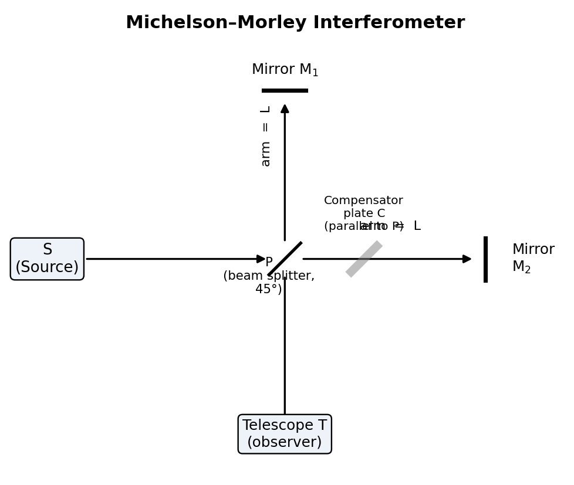
Fig. 1.1 — Schematic layout of the Michelson–Morley interferometer, showing the source S, beam-splitter P, compensator plate, mirrors M1 and M2, and the observing telescope T.
Let v be the speed of the Earth (and hence of the apparatus) through the ether, and c the speed of light in the ether frame. For the beam travelling parallel to the ether wind (P → M1 → P), the effective speed going out is (c − v) and coming back is (c + v), so the time taken is
t₁ = L/(c−v) + L/(c+v) = 2Lc/(c² − v²) = (2L/c)·(1 − v²/c²)⁻¹ ≈ (2L/c)(1 + v²/c²)
For the beam travelling perpendicular to the ether wind (P → M2 → P), simple vector addition (the light must be aimed slightly upstream to compensate for the wind so that it returns to P) gives an effective path speed of √(c² − v²), so that
t₂ = 2L/√(c² − v²) = (2L/c)·(1 − v²/c²)^(−1/2) ≈ (2L/c)(1 + v²/2c²)
The time difference is therefore
Δt = t₁ − t₂ ≈ (L v²)/(c³)
This time difference should manifest itself as a shift in the interference fringes when the whole apparatus is rotated through 90°, since rotation interchanges the roles of the two arms and should double the expected fringe shift. The expected fringe shift, in terms of the number of fringes N, works out to
N = 2Lv²/(λc²)
For L ≈ 11 m (achieved by Michelson and Morley using multiple reflections), λ ≈ 5.5 × 10⁻⁷ m and v = 3 × 10⁴ m/s (Earth's orbital speed), the expected shift was about N ≈ 0.4 of a fringe — well within the resolving capability of the interferometer, which could detect a shift as small as 0.01 of a fringe.
When the experiment was actually performed — at different times of day, in different seasons, and at different orientations — no fringe shift of the expected magnitude was ever observed. The observed shift was consistently less than 0.01 fringe, far smaller than the ≈0.4 fringe predicted by ether theory. This is the famous null result of the Michelson–Morley experiment.
Several explanations were attempted to save the ether hypothesis (e.g., the ether-drag hypothesis, and the Lorentz–FitzGerald contraction hypothesis, which proposed an ad-hoc physical contraction of bodies moving through the ether by exactly the factor needed to cancel the expected shift). None of these were satisfactory or were confirmed by independent experiments.
The correct interpretation, provided by Einstein in 1905, was radical: there is no ether, and the speed of light in free space is the same (c) in every inertial frame of reference, regardless of the motion of the source or the observer. The null result of the Michelson–Morley experiment is thus regarded as one of the crucial pieces of experimental evidence supporting the postulates of special relativity, even though Einstein's own original 1905 paper was motivated mainly by theoretical considerations of electromagnetism rather than by this experiment alone.
Applications of the Michelson interferometer: Beyond its historic role in disproving the ether hypothesis, the Michelson interferometer (and its descendants) remains an important scientific instrument in its own right — it is used for the precise measurement of the wavelength of monochromatic light, for comparing small differences in wavelength (e.g. resolving closely-spaced spectral lines), for the precise measurement of the refractive index of gases and thin transparent samples placed in one arm, for calibrating standards of length against the wavelength of light, and, in its modern, vastly scaled-up laser form, as the basic configuration of the kilometre-scale laser interferometers (such as LIGO) that first directly detected gravitational waves in 2015.
Einstein's special theory of relativity (1905) rests on two postulates:
Postulate 1 (Principle of Relativity): The laws of physics are the same (take identical mathematical form) in all inertial frames of reference. There is no experiment that can be performed to distinguish one inertial frame from another; absolute uniform motion has no meaning.
Postulate 2 (Constancy of the Speed of Light): The speed of light in free space (vacuum) has the same value c ≈ 3 × 10⁸ m/s in all inertial frames of reference, independent of the motion of the source or the observer.
These two simple-looking postulates, when followed to their logical conclusions, force us to abandon the classical Newtonian notions of absolute space and absolute time, and lead to a wholesale revision of our ideas of simultaneity, of length and of time interval — this revised framework is called relativistic mechanics or special relativity, and it replaces the Galilean transformation with the Lorentz transformation described below.
We seek a new transformation connecting the coordinates (x, y, z, t) of an event in frame S to the coordinates (x′, y′, z′, t′) of the same event in frame S′ (moving with velocity v along the common x-axis) that (i) reduces to the Galilean transformation when v ≪ c, and (ii) is consistent with the constancy of the speed of light in both frames.
Since the motion is only along x, we expect y′ = y and z′ = z. Because the transformation must be linear (to preserve the fact that a body moving with uniform velocity in one frame moves with uniform velocity in the other), we assume
x′ = γ(x − vt)
where γ is a constant (to be determined) which may depend on v and c but not on x or t. By the principle of relativity, the inverse transformation must have exactly the same form with v replaced by −v:
x = γ(x′ + vt′)
Now suppose that at t = t′ = 0 a light pulse is emitted from the common origin. According to postulate 2, this pulse must travel with speed c as measured in both frames, so that
x = ct and x′ = ct′
Substituting x = ct and x′ = ct′ into the two transformation equations above:
ct′ = γ(ct − vt) = γt(c − v)
ct = γ(ct′ + vt′) = γt′(c + v)
Multiplying these two equations:
c²tt′ = γ²tt′(c − v)(c + v) = γ²tt′(c² − v²)
Cancelling tt′ (assuming t, t′ ≠ 0):
c² = γ²(c² − v²) ⟹ γ² = c²/(c² − v²) = 1/(1 − v²/c²)
γ = 1/√(1 − v²/c²)
This important quantity γ is called the Lorentz factor. Solving for t′ from the equation ct′ = γt(c − v):
t′ = γt(1 − v/c) = γ(t − vx/c²) [using x = ct]
Thus the complete set of Lorentz transformation equations (S → S′) is:
x′ = γ(x − vt)
y′ = y
z′ = z
t′ = γ(t − vx/c²)
and the inverse transformation (S′ → S) is:
x = γ(x′ + vt′)
y = y
z = z
t = γ(t′ + vx′/c²)
where γ = 1/√(1 − v²/c²) = 1/√(1 − β²), with β = v/c.
Important features of the Lorentz transformation:
It reduces to the Galilean transformation when v ≪ c, since γ → 1 and the vx/c² term becomes negligible — this shows that Newtonian mechanics is the low-speed limiting case of relativistic mechanics.
Space and time are no longer independent; the time coordinate t′ depends on the spatial coordinate x as well as on t — this is the origin of the relativity of simultaneity: two events that are simultaneous in S (same t, different x) are, in general, not simultaneous in S′.
γ ≥ 1 always, and γ → ∞ as v → c, showing that no material body can be accelerated to the speed of light (an infinite Lorentz factor would require infinite energy, as shown in §1.9).
Consider a rod at rest along the x′-axis in frame S′, with its end points at x′₁ and x′₂. Its length as measured in its own rest frame (S′) is called the proper length, L₀ = x′₂ − x′₁.
An observer in frame S, relative to which the rod is moving with velocity v, must measure the positions of both ends of the rod at the same instant of time t (simultaneously in S) in order to obtain the length L = x₂ − x₁ of the moving rod as measured in S.
Using the Lorentz transformation x′ = γ(x − vt), applied to each end of the rod at the same time t:
x′₁ = γ(x₁ − vt)
x′₂ = γ(x₂ − vt)
Subtracting:
x′₂ − x′₁ = γ(x₂ − x₁)
L₀ = γL
L = L₀/γ = L₀√(1 − v²/c²)
This is the phenomenon of length contraction (also called the Lorentz–FitzGerald contraction): a rod in motion, as measured by an observer relative to whom it is moving, appears contracted along the direction of motion by the factor √(1 − v²/c²), compared to its proper length L₀ measured in its own rest frame. There is no contraction in directions perpendicular to the motion (heights and widths perpendicular to v are unaffected).
Since √(1 − v²/c²) < 1 for any v > 0, we always have L < L₀ — the length is greatest when measured in the rest frame of the object, and is contracted for any observer relative to whom the object is moving. Note that this is not an optical illusion nor a real physical squeezing of the rod's material; it is a genuine feature of the geometry of spacetime, and it is entirely reciprocal — an observer in the rod's own rest frame would equally conclude that a rod at rest in S is contracted, if such a rod existed.
Consider a clock at rest at a fixed point x′₀ in frame S′. Two "ticks" of this clock, separated by a proper time interval Δt′ = t′₂ − t′₁ as measured by the co-moving observer in S′ (using a single clock present at both events, since the clock does not move in S′), constitute two events at the same spatial location x′₀ in S′.
Using the inverse Lorentz transformation t = γ(t′ + vx′/c²), applied to both events (with the same x′₀):
t₁ = γ(t′₁ + vx′₀/c²)
t₂ = γ(t′₂ + vx′₀/c²)
Subtracting:
t₂ − t₁ = γ(t′₂ − t′₁)
Δt = γΔt₀
where Δt₀ = Δt′ is the proper time interval (the time interval measured by a clock present at both events, i.e., in the frame in which the clock is at rest), and Δt is the time interval between the same two events as measured by an observer in frame S, relative to whom the clock is moving with speed v. Since γ = 1/√(1 − v²/c²) > 1,
Δt = Δt₀/√(1 − v²/c²) > Δt₀
This is time dilation: a moving clock runs slow, as judged by a stationary observer — or, equivalently, a time interval measured between two events that occur at the same place in a moving frame appears lengthened (dilated) when measured from a frame relative to which that first frame is moving. The proper time Δt₀ is always the smallest time interval that can be assigned to a pair of events; any observer in relative motion measures a longer interval.
Illustrative applications:
Muon decay: Cosmic-ray muons created in the upper atmosphere have a proper mean lifetime of about 2.2 μs, which would let them travel only a few hundred metres at nearly the speed of light before decaying if Newtonian time were absolute. Time dilation, however, lengthens their observed lifetime (as measured from the Earth's frame) enough for a substantial fraction of them to survive the roughly 15 km journey down to the Earth's surface — a well-verified experimental confirmation of time dilation.
Twin paradox (qualitative mention): if one twin undertakes a high-speed round trip in a spacecraft while the other stays on Earth, the travelling twin, upon return, is found to have aged less than the twin who stayed behind — this is not a true "paradox" once it is recognised that the travelling twin's frame is non-inertial (it must accelerate to turn around), so the situation is not symmetric between the twins.
Suppose a particle moves with velocity u′x along the x′-axis, as measured in frame S′, and S′ itself moves with velocity v relative to S along the common x-axis. Classically we would simply add: ux = u′x + v. But this simple addition rule can predict speeds exceeding c, which postulate 2 forbids; we must therefore use the Lorentz transformation to find the correct relativistic rule.
Consider two nearby events on the particle's trajectory, connected by small changes dx′, dt′ in S′ and dx, dt in S. From the (differential form of the) inverse Lorentz transformation,
dx = γ(dx′ + v dt′)
dt = γ(dt′ + v dx′/c²)
Dividing the first by the second:
ux = dx/dt = [γ(dx′ + v dt′)] / [γ(dt′ + v dx′/c²)] = (dx′/dt′ + v) / (1 + v(dx′/dt′)/c²)
Since dx′/dt′ = u′x, this gives the relativistic velocity addition formula:
ux = (u′x + v) / (1 + vu′x/c²)
and the inverse relation:
u′x = (ux − v) / (1 − vux/c²)
Consistency checks:
When u′x and v are both much smaller than c, the denominator ≈ 1, and we recover the familiar Galilean addition ux ≈ u′x + v.
If u′x = c (e.g. a light pulse emitted inside a spaceship moving with speed v), then ux = (c + v)/(1 + vc/c²) = (c+v)/(1 + v/c) = c(c+v)/(c+v) = c — the speed of light comes out to be exactly c in every frame, regardless of v, exactly as demanded by postulate 2. This is a crucial internal consistency check on the whole theory.
No combination of two speeds each less than c can ever combine (via this formula) to exceed c — the formula automatically enforces the ultimate speed limit c, unlike the Galilean rule.
For motion also having components uy, uz perpendicular to v, the transformation of those components (not required for a straight-line derivation here, but worth noting) is uy = u′y/[γ(1 + vu′x/c²)], showing that perpendicular velocity components also change between frames, even though perpendicular lengths do not contract.
One of the most striking predictions of special relativity concerns the mass (inertia) of a moving body. Newtonian mechanics treats the mass m of a body as an invariant, unchanging quantity. Special relativity shows instead that the mass (or, in modern usage, the "relativistic mass") of a body increases with its speed and can be derived by demanding that the law of conservation of momentum remain valid in every inertial frame, consistent with the Lorentz transformation, rather than the Galilean transformation.
Derivation (conceptual, using an elastic collision thought experiment): Consider two identical particles A and B, each of rest mass m₀, that collide perfectly elastically. Analyse the collision in two different inertial frames related by the Lorentz transformation, in a symmetric configuration (a "glancing" collision along y in each particle's own frame) such that momentum in the y-direction must cancel for the total momentum of the system to be conserved, as required by postulate 1. Carrying through the kinematics (details are lengthy and are typically presented via the y-momentum components in the two frames) leads to the conclusion that if the mass of a particle at rest is m₀ (called the rest mass), then when that particle moves with speed v relative to an observer, its mass as measured by that observer must be
m = m₀/√(1 − v²/c²) = γm₀
This is the relativistic mass–velocity relation. Important consequences:
At ordinary speeds (v ≪ c), γ ≈ 1, and m ≈ m₀; the relativistic correction is utterly negligible for everyday objects (cars, planes, etc.), which is why Newtonian mechanics works so well for them.
As v → c, γ → ∞, so m → ∞. This means an infinite force (and infinite energy) would be required to accelerate a massive body all the way up to the speed of light — hence no material particle with non-zero rest mass can ever attain or exceed the speed of light c. This furnishes a deep physical reason behind the ultimate speed limit already hinted at in the velocity-addition formula.
Only massless particles (such as the photon, with m₀ = 0) can travel at exactly c; for them, the expression m = m₀/√(1−v²/c²) is evaluated as an indeterminate form (0/0) rather than becoming infinite.
Einstein's mass–velocity relation, combined with the work–energy theorem, leads to perhaps the most famous equation in all of physics. Consider a particle of rest mass m₀ acted upon by a force F, starting from rest and accelerated to speed v. The work done by the force goes entirely into increasing the kinetic energy of the particle:
dK = F·dx = (dp/dt)·dx = v·dp
where p = mv = γm₀v is the relativistic momentum. Using p = m₀v/√(1−v²/c²) and carrying out the calculus of differentiating p with respect to v, substituting, and integrating from 0 to v (a standard but somewhat lengthy manipulation), one obtains
K = mc² − m₀c²
i.e., the kinetic energy gained by the particle equals the increase in the quantity mc² above its rest value m₀c². This naturally suggests interpreting the quantity mc² itself as the total energy E of the particle:
E = mc² = γm₀c² = m₀c²/√(1 − v²/c²)
Rearranging, E = K + m₀c², i.e., total energy = kinetic energy + rest energy, where the rest energy is defined as
E₀ = m₀c²
This is Einstein's celebrated mass–energy equivalence relation. Its physical meaning is that mass itself is a form of energy (and vice versa) — even a particle at rest, with zero kinetic energy, possesses an intrinsic energy m₀c² by virtue of having mass at all. Conversely, any physical process that changes the rest mass of a system (nuclear fission, nuclear fusion, particle–antiparticle annihilation, etc.) is necessarily accompanied by a corresponding release or absorption of energy ΔE = Δm₀·c². Because c² is an enormously large number (9 × 10¹⁶ m²/s²), even a tiny loss of rest mass corresponds to a huge release of energy — this is the physical basis of the energy released in nuclear reactors, nuclear weapons, and the energy generation process (fusion) that powers the Sun and other stars.
For small speeds (v ≪ c), a binomial expansion of γ = (1 − v²/c²)^(−1/2) ≈ 1 + v²/2c² + … gives
K = m₀c²[γ − 1] ≈ m₀c²(v²/2c²) = ½m₀v²
which correctly reduces to the familiar Newtonian kinetic energy formula, confirming once again that relativistic mechanics contains Newtonian mechanics as its low-speed limiting case.
Just as space and time coordinates (x, t) transform into each other under a Lorentz transformation, the relativistic momentum and energy (px, E) of a particle also mix together under a change of inertial frame, because (E/c, px, py, pz) together form a four-vector (the "energy–momentum four-vector") that transforms exactly like (ct, x, y, z).
For a particle with momentum components (px, py, pz) and total energy E as measured in frame S, the corresponding quantities (p′x, p′y, p′z, E′) measured in frame S′ (moving with velocity v along the common x-axis relative to S) are given by:
p′x = γ(px − vE/c²)
p′y = py
p′z = pz
E′ = γ(E − vpx)
and the inverse transformation:
px = γ(p′x + vE′/c²)
py = p′y
pz = p′z
E = γ(E′ + vp′x)
These are the momentum–energy transformation equations. Notice their structural similarity with the Lorentz transformation of (x, t): E/c² plays a role analogous to t, and px plays a role analogous to x, with the substitution x → px and t → E/c².
A very useful invariant quantity can be constructed from momentum and energy — it has the same value in every inertial frame, exactly as the "spacetime interval" (c²t² − x² − y² − z²) is invariant under the Lorentz transformation of (x,y,z,t):
E² − p²c² = m₀²c⁴ (an invariant, the same in every inertial frame)
where p² = px² + py² + pz². This relation, sometimes called the relativistic energy–momentum relation, is extremely useful in relativistic dynamics (e.g. in high-energy particle physics) since it allows the rest mass m₀ of a particle to be computed directly from measurements of its energy and momentum, without needing to know its velocity. For a photon, m₀ = 0, so this relation reduces to the well-known result E = pc.
Conditions for sustained interference: coherent sources (constant phase difference), same frequency/wavelength, comparable amplitude, and (for visibility) close spacing and narrow width of sources.
Fresnel's biprism creates two virtual coherent sources from a single slit by refraction through a thin-angle biprism, producing interference fringes whose spacing β = λD/d allows measurement of the wavelength of light or the distance between virtual sources.
Thin film interference: path difference introduced by reflection at the top and bottom surfaces of a film of thickness t and refractive index μ, with an extra λ/2 shift at the interface where light goes from a rarer to denser medium. Condition for a bright fringe (reflected system): 2μt cosr = (n + ½)λ.
Wedge-shaped film: a thin air/glass wedge of small angle θ produces equally spaced straight fringes; fringe width β = λ/(2μθ).
Newton's rings: circular fringes formed between a plano-convex lens and a flat glass plate. Radius of the nth dark ring: rn² = nλR (by reflection), used experimentally to determine the wavelength of light or the radius of curvature R of the lens.
Interference is the phenomenon in which two or more light waves, meeting at a point in space, superpose to produce a resultant intensity that is different from the simple sum of the individual intensities — at some points the resultant intensity is greater than the sum (constructive interference) and at other points it is less, possibly even zero (destructive interference). Interference is a direct manifestation of the wave nature of light, and it can be understood using the principle of superposition: when two or more waves overlap at a point, the resultant displacement (or, for light, the resultant electric field) at that point is the vector sum of the displacements that each wave would have produced separately.
Let two coherent light waves of the same frequency ω, travelling in nearly the same direction, arrive at a point P with amplitudes a₁ and a₂ and a constant phase difference φ between them:
y₁ = a₁ sin(ωt)
y₂ = a₂ sin(ωt + φ)
By the superposition principle, the resultant disturbance is y = y₁ + y₂, which (by standard trigonometric addition of two sinusoids of the same frequency) can be shown to be another simple harmonic disturbance of the same frequency,
y = A sin(ωt + θ)
with resultant amplitude A given by
A² = a₁² + a₂² + 2a₁a₂ cos φ
Since intensity is proportional to the square of the amplitude (I ∝ A²), the resultant intensity at P is
I = I₁ + I₂ + 2√(I₁I₂) cos φ
This is the fundamental law of interference. The term 2√(I₁I₂) cos φ is called the interference term; it is this cross-term (absent when we simply add up intensities of incoherent sources) that produces the interference pattern of bright and dark fringes.
Constructive interference (bright fringe): occurs when cos φ = +1, i.e. when the phase difference φ = 0, 2π, 4π, … i.e. when the path difference Δ = nλ (n = 0, 1, 2, …, an integer number of full wavelengths). Then I = I₁ + I₂ + 2√(I₁I₂), which is a maximum. If I₁ = I₂ = I₀, then Imax = 4I₀.
Destructive interference (dark fringe): occurs when cos φ = −1, i.e. when φ = π, 3π, 5π, … i.e. when the path difference Δ = (n + ½)λ (an odd multiple of half a wavelength). Then I = I₁ + I₂ − 2√(I₁I₂), which is a minimum. If I₁ = I₂ = I₀, this minimum is exactly zero (complete darkness), Imin = 0.
For general phase difference, the intensity varies smoothly between these limits, producing a pattern of alternating bright and dark bands or fringes when observed on a screen — this pattern is called an interference pattern, and the perpendicular distance between two consecutive bright (or dark) fringes is called the fringe width.
For a stable, observable interference pattern (i.e. one in which the positions of the bright and dark fringes do not shift about randomly with time, but remain fixed and clearly visible), certain conditions must be satisfied by the interfering sources:
1. The two sources must be coherent, i.e. they must maintain a constant phase difference with each other at all times. This is the single most important condition. Two genuinely independent, physically separate light sources (e.g. two separate light bulbs) can never be coherent, because each source emits light in millions of independent, randomly-phased wave trains (each lasting only about 10⁻⁸ –10⁻⁹ s) — the phase difference between them fluctuates randomly and far too rapidly for the eye (or any detector) to see a steady pattern; the interference term averages to zero and only the sum I₁ + I₂ is observed. In practice, coherent sources are always produced by splitting light from a single source into two parts (by division of wavefront, as in Young's double slit, or by division of amplitude, as in thin-film and Michelson interferometer arrangements), so that both parts originate from the same atoms at the same instant and hence necessarily maintain a fixed phase relationship.
2. The two sources must be monochromatic (or, at least, emit the same or very close wavelengths) — otherwise fringes of different colours/wavelengths will be of different widths and will overlap to wash out the pattern (this is why white-light fringes are visible clearly only very close to the zero-order/central fringe, beyond which they quickly become coloured and then blur into uniform illumination).
3. The amplitudes of the two waves should be equal or nearly equal, so that the destructive interference minima are completely (or very nearly) dark, giving a pattern of good contrast between bright and dark fringes (good "fringe visibility").
4. The two sources should be narrow (ideally point or line sources), because a broad source can be thought of as a large number of independent point sources, each producing its own fringe pattern displaced slightly from the others; if the source is too wide, these displaced patterns overlap and wash out the fringes (this consideration determines the maximum permissible width of the source slit in a double-slit type experiment).
5. The two waves must travel in (nearly) the same direction (or be brought together by superposition at the observation point), and, for polarized light, must have the same (or a component along the same) plane of polarization, since two beams polarized in mutually perpendicular planes do not interfere.
6. The path difference between the two waves should not be too large — in practice not more than a few thousand wavelengths — since real (non-ideal, non-monochromatic) light sources have only a finite coherence length, beyond which the fixed phase relationship between different parts of the same wave train is lost.
When light falls on a thin film (a layer of transparent medium such as a soap film, an oil film on water, or a thin film of air between two glass surfaces, with thickness typically comparable to the wavelength of light, i.e. of the order of a micrometre or less), part of the light is reflected from the top surface of the film and part is transmitted into the film, reflected from the bottom surface, and re-emerges through the top surface. These two reflected beams (or, in transmission, the corresponding transmitted beams) originate from the same incident beam and are hence automatically coherent (division of amplitude), and they interfere on recombination — the resulting colours seen in soap bubbles and oil slicks are due to exactly this kind of interference.
Depending on the geometry of the film, thin-film interference problems are generally classified as:
Interference in a film of uniform (constant) thickness — produces uniform illumination (a single overall colour/intensity) for a given angle of viewing, but the colour changes with the angle of incidence (this configuration gives rise to Haidinger fringes, "fringes of equal inclination").
Interference in a film of non-uniform (varying) thickness — a "wedge-shaped" film — produces a pattern of bright and dark fringes (Fizeau fringes, "fringes of equal thickness") because the path difference between the two interfering reflected beams now varies systematically from one point of the film to another, tracing out the varying thickness of the film. This is the case of primary interest in this syllabus and is treated in detail below.
A wedge-shaped film is a thin film whose two surfaces are not parallel but are inclined to each other at a small angle α, so that the thickness of the film increases (or decreases) uniformly from one edge to the other — geometrically like a thin, flat wedge. Such a film is easily produced in the laboratory by placing two optically flat glass plates in contact along one edge, with a thin spacer (such as a piece of thin wire, foil, or a hair) inserted at the other edge, enclosing a thin wedge of air between them.
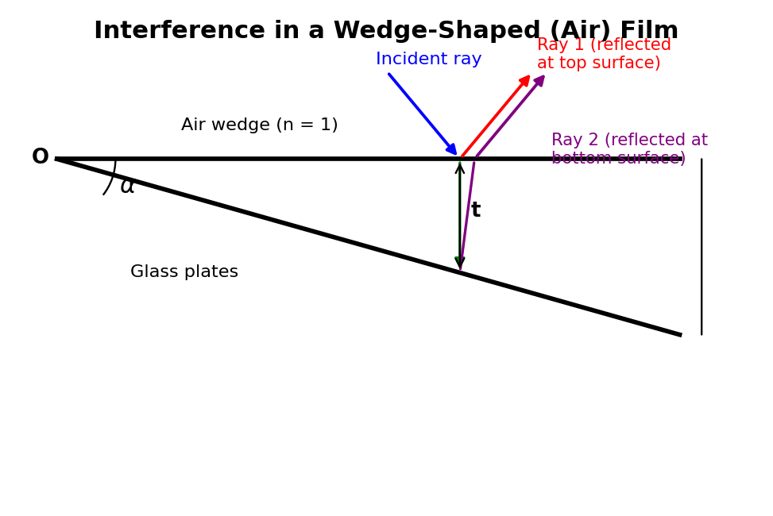
Fig. 1.2 — Interference in a wedge-shaped air film: Ray 1 is reflected at the top surface and Ray 2 is reflected at the bottom surface, after traversing the film of local thickness t; the two rays interfere on recombination.
Theory: Consider monochromatic light of wavelength λ incident nearly normally on the wedge-shaped film of refractive index μ. At a point where the film thickness is t, part of the incident ray is reflected from the top (upper) surface of the film, and part is refracted into the film, reflected from the bottom (lower) surface, and emerges parallel to the first reflected ray. These two rays are brought together (by the eye's lens, or a viewing telescope) and interfere.
The geometric path difference between the two rays, for near-normal incidence, works out (by standard geometrical-optics calculation of the extra path traveled inside the film) to be 2μt cos r, where r is the angle of refraction inside the film (r ≈ 0 for near-normal incidence, so cos r ≈ 1, and the path difference is simply ≈ 2μt).
In addition, when light reflects off a medium of higher refractive index from a medium of lower refractive index (i.e., reflection at the top surface of the film, going from a rarer to a denser medium, such as air to glass, or air to the glass–soap-film interface), it undergoes an abrupt phase change of π (equivalent to a path difference of λ/2), according to the Stokes' treatment of reflection. No such extra phase change occurs for the ray reflected at the bottom surface (going from denser film back to rarer medium below, e.g. film to air in the case of an air-wedge sandwiched between two glass plates — here it is actually the ray reflected at the lower glass surface that suffers the π phase change, depending on which interface is denser-to-rarer; the essential point is that exactly one of the two reflected rays suffers this extra λ/2 path difference, and one does not).
Accounting for this extra path difference of λ/2 due to reflection, the total effective path difference between the two interfering rays is
Δ = 2μt cos r ± λ/2
Taking the near-normal-incidence case (cos r ≈ 1) and including the λ/2 correction due to reflection, the conditions for bright and dark fringes (for reflected light) become:
Bright fringe (constructive interference): 2μt = (2n − 1)λ/2 = (n − ½)λ, n = 1, 2, 3, …
Dark fringe (destructive interference): 2μt = nλ, n = 0, 1, 2, 3, …
(Different textbooks state these with slightly different but equivalent integer bookkeeping; the essential physical content is that bright and dark fringes occur at those values of thickness t for which 2μt equals, respectively, an odd or an even multiple of λ/2.)
Fringe width of a wedge-shaped film: Since the thickness t of the wedge increases uniformly with distance x from the thin edge (where the two surfaces meet), we may write t = xα (for small wedge angle α, in radians, with x measured along the film from the edge). Substituting into the dark-fringe condition 2μt = nλ:
2μ(xα) = nλ ⟹ xn = nλ/(2μα)
The fringe width β (distance between two consecutive dark, or two consecutive bright, fringes) is the difference in x between the nth and (n+1)th fringe:
β = x_(n+1) − x_n = λ/(2μα)
This shows that the fringes of a wedge-shaped film are equally spaced, straight, and parallel to the thin edge of the wedge (i.e., parallel to the line along which the two surfaces meet) — provided the wedge angle α is small and uniform. The fringe width is inversely proportional to the wedge angle α: a sharper wedge (larger α) gives closely-spaced fringes, while a nearly-flat wedge (small α) gives widely-spaced fringes.
Practical applications of wedge-fringe interference:
Testing the flatness/optical uniformity of glass surfaces and lenses: if the two surfaces forming the wedge are not perfectly flat, the fringes are not straight but are distorted, curved, or irregularly spaced — the departure of the fringes from straight, equally-spaced lines is a direct, extremely sensitive (sub-wavelength) measure of surface irregularities, and this technique is routinely used in optical workshops for testing the flatness of lenses and mirrors.
Measurement of very small thicknesses/diameters: by counting the number of fringes formed over the length of a wedge formed with a thin object (a hair, a foil, a thin wire) as the spacer, the thickness of the spacer can be determined very precisely from the relation d = Nλ/2 for the spacer thickness d over a wedge length L containing N fringes (using similar-triangles geometry relating the wedge length, spacer thickness, and wedge angle).
Testing the uniformity of thin coatings/films in industrial and optical-fabrication settings.
Example 1. A rocket ship has a proper length of 100 m and moves with a speed of 0.8c relative to an observer on Earth. Calculate the length of the rocket as measured by the Earth observer.
Solution: The Earth observer measures the contracted length L = L₀√(1 − v²/c²). Here L₀ = 100 m and v/c = 0.8, so v²/c² = 0.64, and 1 − v²/c² = 0.36, whose square root is 0.6. Hence L = 100 × 0.6 = 60 m. The rocket appears shortened to 60 m along its direction of motion, as measured from Earth.
Example 2. A muon is created in the upper atmosphere with a proper mean lifetime of 2.2 μs, and it moves towards the Earth's surface with a speed of 0.998c. Calculate (a) the dilated lifetime as measured by an observer on Earth, and (b) the average distance the muon travels (as measured from Earth) before decaying.
Solution: (a) γ = 1/√(1 − 0.998²) = 1/√(1 − 0.996) = 1/√0.003996 ≈ 1/0.0632 ≈ 15.8. The dilated lifetime is Δt = γΔt₀ = 15.8 × 2.2 μs ≈ 34.8 μs. (b) The distance travelled, as measured from Earth, is d = v × Δt ≈ (0.998 × 3 × 10⁸ m/s) × (34.8 × 10⁻⁶ s) ≈ 10.4 km. Without time dilation, a muon of proper lifetime 2.2 μs travelling even at nearly c would cover only about 660 m before decaying — time dilation is essential to explain why so many muons are observed to reach the Earth's surface from a production height of several kilometres.
Example 3. Calculate the speed at which the mass of a particle becomes twice its rest mass.
Solution: We require m = 2m₀, i.e. γ = 2. From γ = 1/√(1−v²/c²), we get 1−v²/c² = 1/4, so v²/c² = 3/4, giving v = (√3/2)c ≈ 0.866c ≈ 2.6 × 10⁸ m/s.
Example 4. Calculate the energy released (in MeV) when 1 milligram of matter is completely converted into energy.
Solution: Using E = mc², with m = 1 × 10⁻⁶ kg and c = 3 × 10⁸ m/s: E = (1×10⁻⁶)(3×10⁸)² = (1×10⁻⁶)(9×10¹⁶) = 9 × 10¹⁰ J. Converting to electron-volts (1 eV = 1.6×10⁻¹⁹ J), E ≈ 9×10¹⁰ / 1.6×10⁻¹⁹ ≈ 5.6 × 10²⁹ eV, an enormous amount of energy from a vanishingly small mass — illustrating why even small mass defects in nuclear reactions release very large amounts of energy.
Example 5. In a wedge-shaped air film formed between two glass plates, the 10th dark fringe (from the thin edge) is observed at a distance of 5 mm from the edge, when illuminated normally by light of wavelength 5890 Å. Calculate the wedge angle.
Solution: For an air film (μ = 1), the dark fringe condition is 2t = nλ, and with t = xα, we have x_n = nλ/(2α). For n = 10, x₁₀ = 5 × 10⁻³ m and λ = 5890 × 10⁻¹⁰ m: α = nλ/(2x_n) = (10 × 5890 × 10⁻¹⁰)/(2 × 5 × 10⁻³) = (5.89×10⁻⁶)/(10⁻²) = 5.89 × 10⁻⁴ radian (about 2 minutes of arc).
| Concept | Key Relation |
|---|---|
| Lorentz factor | γ = 1/√(1 − v²/c²) |
| Lorentz transformation | x′ = γ(x − vt); t′ = γ(t − vx/c²) |
| Length contraction | L = L₀√(1 − v²/c²) |
| Time dilation | Δt = γΔt₀ |
| Velocity addition | ux = (u′x + v)/(1 + vu′x/c²) |
| Mass variation | m = m₀/√(1 − v²/c²) |
| Mass–energy equivalence | E = mc², E₀ = m₀c² |
| Energy–momentum relation | E² − p²c² = m₀²c⁴ |
| Law of interference | I = I₁ + I₂ + 2√(I₁I₂) cos φ |
| Wedge film fringe width | β = λ/(2μα) |
Short Answer Type:
1. Define an event and a frame of reference. Distinguish between inertial and non-inertial frames with examples.
2. Write the Galilean transformation equations and explain why they fail for light waves.
3. State the two postulates of the special theory of relativity.
4. What was the purpose of the Michelson–Morley experiment? What was its outcome?
5. Define proper length and proper time. Which is always the smaller quantity, and why?
6. Show that the Lorentz transformation reduces to the Galilean transformation for v ≪ c.
7. Why can no material particle be accelerated to the speed of light?
8. What is meant by the relativity of simultaneity?
Long Answer / Numerical Type:
1. Derive the Lorentz transformation equations for space and time from the two postulates of special relativity.
2. Derive an expression for length contraction and discuss its physical significance.
3. Derive the time dilation formula and explain how it is confirmed by the observation of cosmic-ray muons.
4. Derive the relativistic velocity addition formula and show that it is consistent with the constancy of the speed of light.
5. Derive the mass–energy equivalence relation E = mc² and discuss its consequences.
6. Derive an expression for the fringe width of a wedge-shaped thin film, and describe how it is used to test the flatness of optical surfaces.
7. Discuss the conditions necessary for obtaining a sustained interference pattern, explaining the physical reason for each condition.
Single-slit diffraction: secondary wavelets from different parts of the slit interfere; minima occur at a sinθ = nλ (n = 1,2,3…). The central maximum is twice as wide as subsidiary maxima.
Double-slit and N-slit diffraction: the diffraction envelope (from each slit) modulates the finer interference fringes (between slits); as N grows, principal maxima sharpen and secondary maxima multiply — the basis of the diffraction grating.
Diffraction grating: a periodic array of N slits with grating element (a+b). Principal maxima satisfy (a+b) sinθ = nλ. Grating spectra separate wavelengths with far greater precision than a prism.
Resolving power: R = λ/dλ = nN — the ability of a grating to separate two close wavelengths improves with more illuminated lines (N) and higher order (n). Rayleigh's criterion: two lines are just resolved when the principal maximum of one falls on the first minimum of the other.
Diffraction is the phenomenon of bending of light waves around the edges of an obstacle or aperture, and their consequent spreading into the region of the geometrical shadow, when the size of the obstacle/aperture is comparable to the wavelength of light. Diffraction is, like interference, a direct consequence of the wave nature of light, and it can be understood using Huygens' principle, according to which every point on a wavefront acts as a source of secondary spherical wavelets, and the envelope of these wavelets at a later instant gives the new position of the wavefront. When part of a wavefront is obstructed by an aperture or obstacle, the secondary wavelets from the unobstructed portions of the wavefront spread out into the shadow region and interfere with each other, producing the diffraction pattern of bright and dark bands.
Distinction between interference and diffraction: Interference results from the superposition of waves from two (or a few) distinct, separated coherent sources, whereas diffraction results from the superposition of a continuum of secondary wavelets originating from different parts of the same wavefront. In practice, both phenomena often occur together and the distinction is somewhat a matter of convenience and historical convention rather than a fundamental physical difference.
Diffraction phenomena are conventionally divided into two classes based on the geometry of illumination:
Fresnel diffraction: the source and/or the screen of observation are at a finite distance from the diffracting aperture/obstacle, so that the wavefronts incident on, and/or leaving, the aperture are not plane but spherical/cylindrical. This is the more general, but mathematically more complicated, case.
Fraunhofer diffraction: both the source and the screen are effectively at infinite distance from the diffracting aperture (in practice, this is achieved conveniently in the laboratory by placing the source at the focus of a convex lens, so that a plane wavefront falls on the aperture, and by observing/collecting the diffracted light with a second convex lens that brings parallel diffracted rays to a focus on a screen placed at its focal plane). Fraunhofer diffraction is mathematically simpler and is the case relevant to single-slit, double-slit and diffraction-grating problems considered in this course.
Consider a single narrow slit AB of width e, illuminated normally by a plane monochromatic wavefront of wavelength λ (obtained by placing a slit source at the focus of a convex lens L1). According to Huygens' principle, every point of the wavefront within the slit acts as a source of secondary wavelets; a lens L2 placed beyond the slit brings the parallel diffracted rays that emerge at angle θ to the normal to a focus at a point P on the screen placed at the focal plane of L2.
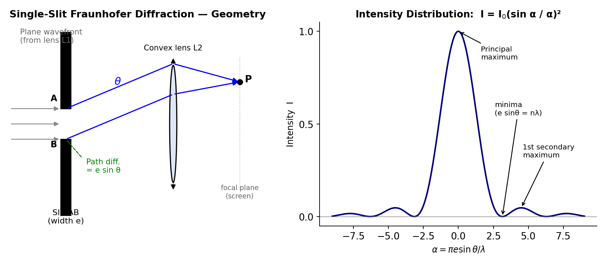
Fig. 2.1 — Geometry of single-slit Fraunhofer diffraction (left) and the resulting intensity distribution I = I0(sin α/α)² (right), showing the bright central maximum flanked by much fainter secondary maxima.
Path difference: The extra path travelled by the wavelet from the extreme edge B of the slit, compared to the wavelet from the extreme edge A, in the direction θ, is
Δ = e sin θ
To find the resultant intensity at P, imagine the slit divided into a large number of equal, narrow strips, each acting as a secondary source, with a phase difference between consecutive strips that increases linearly across the width of the slit. Summing (integrating) the contributions of all these secondary sources (a standard phasor/vector-addition calculation, or equivalently a direct integration of the wave disturbance across the slit width) gives the resultant amplitude at angle θ as
R = A (sin α)/α , where α = (πe sin θ)/λ
and A is the amplitude that would be obtained at θ = 0 if all the secondary wavelets acted in phase (α → 0 limit, where sin α/α → 1). The resultant intensity is therefore
I(θ) = I₀ (sin α / α)², α = (πe sin θ)/λ
This function, (sin α/α)², is called the diffraction function, and its plot against α (or θ) has the following characteristic features:
Principal (central) maximum at α = 0, i.e. θ = 0, where I = I₀ (the maximum possible intensity) — this is by far the brightest part of the pattern.
Minima (zero intensity) occur whenever sin α = 0 but α ≠ 0, i.e. α = ±π, ±2π, ±3π, …, which translates to the condition
e sin θ = ±nλ, n = 1, 2, 3, …
i.e. minima occur whenever the slit width contains an exact integer number of wavelengths of path difference across it.
Secondary maxima occur approximately midway between successive minima (their exact positions are found by setting d/dα[(sinα/α)²] = 0, which leads to the transcendental equation tan α = α, whose roots occur near α ≈ ±3π/2, ±5π/2, …). The intensities of the secondary maxima fall off rapidly — the first secondary maximum has an intensity only about 4.5% of the principal maximum, the second about 1.6%, and so on — because progressively less of the slit contributes constructively to each successive secondary maximum.
Thus the single-slit Fraunhofer diffraction pattern consists of a very bright, comparatively wide central maximum, flanked symmetrically on either side by a series of much fainter, narrower secondary maxima, separated by exactly dark minima — this is the typical diffraction pattern seen when a laser beam is passed through a narrow single slit.
Now consider two identical parallel slits, each of width e, separated (centre-to-centre, or equivalently gap-to-gap by the same convention) by a distance d (d is called the grating element or slit separation, and d > e). Each slit individually gives rise to a single-slit diffraction pattern of the type described above, but since there are now two coherent sources of secondary wavelets (one from each slit), an additional two-beam interference pattern (like Young's double-slit fringes) is superposed on top of the single-slit diffraction envelope.
Following through the vector/phasor addition of the wavelets from both slits, the resultant intensity at angle θ is found to be
I(θ) = I₀ (sin α/α)² · cos²β
where α = πe sin θ/λ (exactly as for the single slit, giving the diffraction "envelope") and
β = πd sin θ/λ
is a new phase-difference parameter associated with the interference between the two slits, giving rise to the additional cos²β factor. This resultant pattern is thus the product of two factors:
The diffraction term (sin α/α)², which depends on the individual slit width e, and which determines the overall "envelope" shape (the central maximum and secondary maxima due to a single slit acting alone), and
The interference term cos²β, which depends on the slit separation d, and which produces a rapid oscillation of bright and dark fringes (interference maxima and minima) within the diffraction envelope.
The interference maxima (bright fringes) occur where cos²β = 1, i.e. β = 0, ±π, ±2π, …, giving the condition
d sin θ = nλ, n = 0, ±1, ±2, …
Some of these interference maxima are found to be missing (suppressed) if they happen to coincide with a diffraction minimum (e sin θ = mλ); the resulting "missing orders" depend on the ratio d/e.
A diffraction grating is an optical element consisting of a very large number N of identical, parallel, equally-spaced narrow slits (or, equivalently, a set of fine parallel scratched/ruled lines on glass or metal, with the unruled portions acting as the transmitting/reflecting slits), typically several hundred to several thousand lines per millimetre. The distance d between the centres of two consecutive slits (= the sum of the width of a transmitting slit and the width of an opaque ruled line) is called the grating element (grating constant), and if there are N₀ lines ruled per unit length of the grating, then d = 1/N₀.
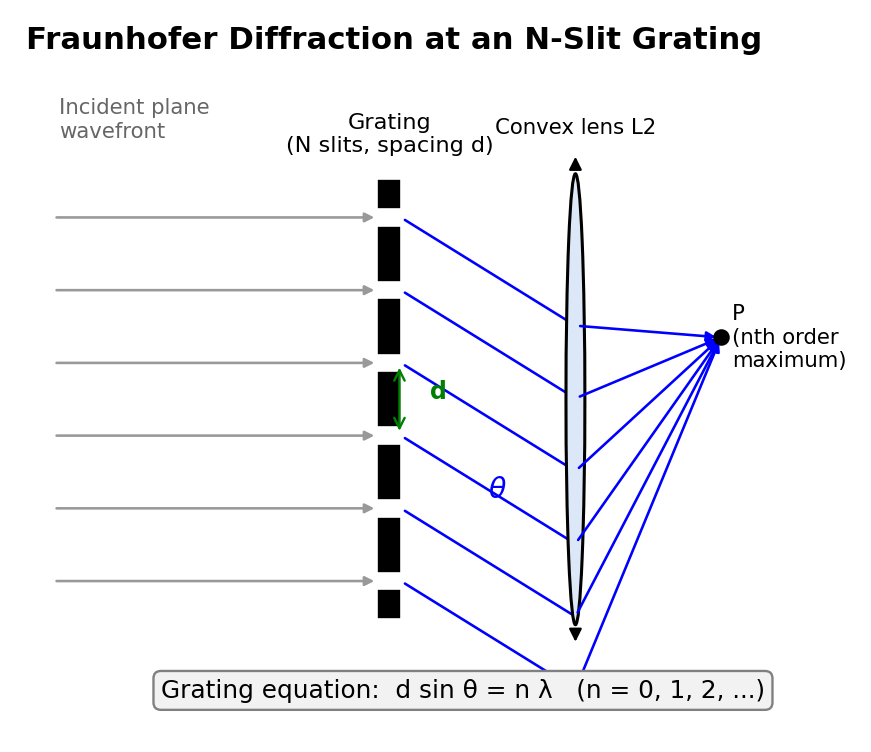
Fig. 2.2 — Fraunhofer diffraction at an N-slit grating: light diffracted at angle θ from every slit arrives in phase at P whenever the grating equation d sin θ = nλ is satisfied.
Extending the two-slit analysis of §2.3 to N slits (using the standard phasor sum for N equally-spaced, equal-amplitude sources with progressively increasing phase), the resultant intensity in the Fraunhofer diffraction pattern of an N-slit grating is found to be
I(θ) = I₀ (sin α/α)² · (sin Nβ / sin β)²
where α = πe sin θ/λ (single-slit diffraction factor, giving the overall envelope, unchanged from before) and β = πd sin θ/λ (inter-slit phase-difference parameter, as before). The factor (sin Nβ/sin β)² is the N-slit interference factor, and it replaces the simple cos²β factor of the two-slit case.
Principal maxima: occur where sin β = 0 but sin Nβ/sin β does not itself vanish, i.e. at β = 0, ±π, ±2π, …, giving the well-known grating equation
d sin θ = nλ, n = 0, 1, 2, 3, …
where n is called the order of the spectrum (n = 0 is the central, undeviated maximum common to all wavelengths; n = 1, 2, 3, … give the first-order, second-order, etc. spectra on either side). At a principal maximum, the N wavelets from all N slits add up exactly in phase, so the resultant amplitude is N times that of a single slit, and the resultant intensity is proportional to N² — this is why, for a grating with a very large number of slits N, the principal maxima are extremely intense.
Minima: occur (N − 1) times between each pair of consecutive principal maxima, wherever sin Nβ = 0 but sin β ≠ 0, i.e. Nβ = mπ (m an integer not a multiple of N).
Secondary maxima: (N − 2) very much weaker secondary maxima occur between consecutive minima; their number and intensity depend on N. As N becomes large (as in a real grating with thousands of lines), these secondary maxima become vanishingly faint and the principal maxima become extremely sharp, narrow, and well-separated bright lines — this sharpening of the principal maxima with increasing N is the key property that makes a diffraction grating an excellent spectroscopic instrument for resolving closely-spaced spectral lines (see §2.5 below), in sharp contrast to the broad, poorly-resolved fringes of a simple two-slit arrangement.
Since the grating equation d sin θ = nλ shows that the angle θ at which a given order n is formed depends on the wavelength λ, a grating illuminated with white (polychromatic) light produces, in each order n ≥ 1, a spectrum — different wavelengths (colours) are diffracted through different angles, with red (longer λ) deviated more than violet (shorter λ) for a given order — a diffraction grating is, in fact, the standard dispersing element used in modern grating spectrometers.
The resolving power of any optical dispersing instrument (grating or prism) is defined as its capacity to produce separately distinguishable diffraction/spectral images of two spectral lines whose wavelengths are very close to each other. If λ and λ + dλ are the two nearly-equal wavelengths that can just be distinguished (resolved) as separate by the instrument, the resolving power is defined as the dimensionless ratio
Resolving Power = λ/dλ
The criterion universally used to decide whether two close spectral lines are "just resolved" is the Rayleigh criterion: two spectral lines are said to be just resolved when the principal maximum of the diffraction pattern of one line falls exactly on the first minimum of the diffraction pattern of the other line. If they are closer together than this, the two patterns overlap so much that only a single, broadened maximum is seen, and the two lines cannot be distinguished; if they are farther apart than this, two clearly separated maxima with a discernible dip between them are seen.
Derivation for a grating: Consider the nth order principal maximum for wavelength λ, formed at angle θ, satisfying d sin θ = nλ. The angular half-width of this principal maximum (i.e., the angular distance from the maximum to the adjacent minimum) can be shown, from the N-slit intensity formula of §2.4, to be given by the condition that the path difference across the whole grating (of N slits, total width Nd) changes by exactly one extra wavelength between the maximum and the adjacent minimum:
Nd sin(θ + dθ) − Nd sin θ = λ ⟹ Nd cos θ · dθ = λ
By the Rayleigh criterion, this same angular separation dθ must equal the angular separation between the nth order maxima of the two wavelengths λ and λ+dλ, which (differentiating the grating equation d sin θ = nλ with respect to λ, at fixed order n) is given by
d cos θ · dθ = n dλ
Equating the two expressions for dθ (i.e. dividing the second equation by the first, or eliminating dθ between them):
n dλ / d cos θ = λ / (Nd cos θ)
n dλ = λ/N
Resolving Power = λ/dλ = nN
Thus, the resolving power of a diffraction grating in the nth order is directly proportional to (i) the total number of ruled lines N on the grating that are actually illuminated, and (ii) the order n of the spectrum being observed. This important formula shows why gratings with a very large total number of lines (achieved by ruling many thousands of lines per millimetre over a wide illuminated aperture) are needed to resolve very closely-spaced spectral lines (such as the sodium D-lines, or fine structure in atomic spectra), and why observing in a higher order (where practically feasible, since intensity typically falls off in higher orders) improves the resolving power for a grating of a given N.
Applications:
Grating spectrometers/spectrographs: the standard dispersing element (in preference to a prism) used in modern spectroscopic instruments, for identifying the wavelengths present in the light emitted or absorbed by a source, and hence for chemical/elemental analysis of stars, flames, discharge lamps, and laboratory samples (spectrochemical analysis).
Precision measurement of wavelength: since the grating equation d sin θ = nλ involves only the (precisely known, manufactured) grating element d and simply-measured angles, a grating provides one of the most accurate methods of measuring the wavelength of light.
Determination of the resolving power/fine structure of spectral lines, as discussed above, allowing the study of atomic energy-level splitting (e.g. due to electron spin, external fields) that would otherwise be unresolvable.
Wavelength-division multiplexing (WDM) in optical communication, and X-ray diffraction gratings/crystal lattices (an extension of the same physical principle to much shorter wavelengths) used in crystallography and materials science.
Limitations:
A grating spreads the incident energy of a given wavelength across many diffraction orders (n = 0, ±1, ±2, …) simultaneously, so that the light intensity available in any one order (particularly higher orders) is considerably reduced compared with the intensity that a simple prism spectrometer would deliver in its single, undivided spectrum.
Overlapping of spectral orders can occur: a long wavelength in a lower order may be diffracted through the same angle as a shorter wavelength in the next higher order (since d sin θ = n₁λ₁ = n₂λ₂ for suitable λ₁, λ₂), causing ambiguity that must be resolved using auxiliary filters or by restricting the wavelength range under study.
High-resolution gratings (with very large N, ruled with extreme precision over a wide aperture) are expensive and technically difficult to manufacture (though modern replica and holographically-produced gratings have greatly reduced this cost).
Manufacturing imperfections (irregular line spacing, non-uniform groove profile) introduce spurious "ghost" lines and reduce the effective resolving power below the theoretical value nN.
Double refraction (birefringence): in anisotropic crystals like calcite, an incident ray splits into an ordinary (O) ray obeying Snell's law and an extraordinary (E) ray that does not, because refractive index depends on direction for the E-ray.
Nicol prism: a calcite crystal cut and cemented with Canada balsam so that the O-ray undergoes total internal reflection and is absorbed, transmitting only plane-polarized E-ray light.
Wave plates: a quarter-wave plate introduces a λ/4 (90°) path difference between O and E components, converting plane-polarized light to circularly/elliptically polarized light; a half-wave plate introduces λ/2 (180°), rotating the plane of polarization.
Optical activity: certain substances (quartz, sugar solutions) rotate the plane of polarized light. Fresnel explained this by decomposing plane-polarized light into two counter-rotating circular components travelling at different speeds. Specific rotation is measured with a polarimeter (Laurent's half-shade or biquartz type), central to sugar/pharmaceutical quality testing.
Ordinary light (from the sun, an incandescent bulb, etc.) is unpolarized: it consists of transverse electromagnetic waves in which the electric field vector vibrates randomly and rapidly in all directions perpendicular to the direction of propagation, with no preferred direction of vibration. Polarization is the phenomenon of restricting the vibrations of the electric field of a light wave to a single plane (or, more generally, to a specific pattern such as a circle or an ellipse) containing the direction of propagation. The mere existence of polarization phenomena is direct experimental proof that light is a transverse wave (only transverse waves can be polarized; a longitudinal wave, such as sound, has no direction transverse to its propagation to be "restricted" to, and hence cannot be polarized).
Double refraction (birefringence): Certain naturally-occurring anisotropic crystals — most notably calcite (CaCO₃, also called Iceland spar) and quartz (SiO₂) — exhibit the remarkable property that a single ray of ordinary unpolarized light, on entering the crystal, splits into two refracted rays, travelling (in general) in different directions inside the crystal and emerging as two separate, spatially-displaced parallel rays. This phenomenon is called double refraction or birefringence. Careful investigation reveals that the two emergent rays are completely plane-polarized, with their planes of polarization mutually perpendicular to each other.
In a doubly-refracting (uniaxial) crystal such as calcite or quartz, there exists a special direction, called the optic axis, along which a ray of light travels without splitting into two rays (light travelling exactly along the optic axis experiences no double refraction). Except along this special direction, an incident ray of unpolarized light splits inside the crystal into two rays:
The Ordinary ray (O-ray): this ray obeys the ordinary laws of refraction (Snell's law) in every direction inside the crystal, travels with the same speed vₒ in all directions within the crystal (as if the crystal were an ordinary isotropic medium, characterised by a single refractive index μₒ), and its vibrations (electric field) are perpendicular to the plane containing the optic axis and the ray (called the principal plane).
The Extraordinary ray (E-ray): this ray does not, in general, obey the ordinary Snell's law (e.g. it may be refracted even at normal incidence, and it does not necessarily lie in the plane of incidence), travels with a speed vₑ that varies with direction inside the crystal (being equal to vₒ only along the optic axis, and differing maximally from vₒ in the direction perpendicular to the optic axis, characterised by a principal refractive index μₑ different from μₒ), and its vibrations are confined to the principal plane (i.e., parallel to the plane containing the optic axis and the ray).
Crystals in which vₑ > vₒ everywhere except along the optic axis (equivalently μₑ < μₒ) are called negative crystals (e.g. calcite); crystals in which vₑ < vₒ (μₑ > μₒ) are called positive crystals (e.g. quartz).
Huygens' explanation: Huygens explained double refraction by postulating that when a point inside the crystal is disturbed, it gives rise to two simultaneous secondary wavefronts spreading out from that point — a spherical wavefront (associated with the O-ray, which therefore travels with the same speed vₒ in every direction, since a sphere has the same radius in every direction) and an ellipsoidal wavefront of revolution about the optic axis (associated with the E-ray, whose speed vₑ(θ) therefore varies with the direction θ from the optic axis, being equal to vₒ exactly along the optic axis, where the sphere and ellipsoid touch, and differing progressively more from vₒ as the direction moves away from the optic axis). The overall wavefront inside the crystal, at any instant, is the common tangential envelope of the (infinitely many, one from each disturbed point) individual sphere-and-ellipsoid wavelet pairs, and the actual directions of the O-ray and E-ray for a given incident ray are found (exactly as in the ordinary Huygens' construction for refraction) from the points of tangency of this envelope construction, appropriately drawn for the crystal surface geometry.
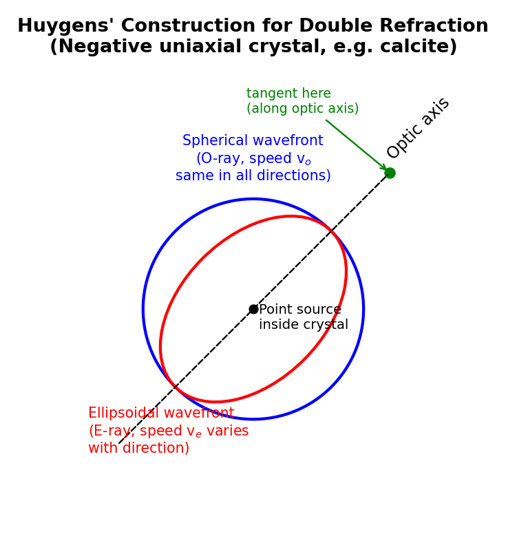
Fig. 2.3 — Huygens' construction for a negative uniaxial crystal (e.g. calcite): the spherical (O-ray) and ellipsoidal (E-ray) wavefronts touch exactly along the optic axis and separate progressively away from it.
A Nicol prism is a widely-used device, made from a natural calcite crystal, that produces a beam of completely plane-polarized light by eliminating the ordinary ray (via total internal reflection at an internal interface) while allowing the extraordinary ray to pass straight through undeviated (or only slightly displaced).
Construction: A suitably-cut calcite crystal, whose natural faces make an angle of 71° with the end faces, is taken and its end faces are ground down and re-polished so that the angle they make with the long edges of the crystal becomes 68° (instead of the natural 71°). The crystal is then cut into two pieces along a plane perpendicular to the principal section (the plane containing the optic axis and perpendicular to the two end faces) and passing through the obtuse-angled corners of the end faces. The two cut surfaces are then ground optically flat and cemented back together with a thin layer of Canada balsam (a transparent natural resin/cement whose refractive index, μ = 1.55, lies between the ordinary index of calcite, μₒ = 1.658, and the extraordinary index, μₑ = 1.486).
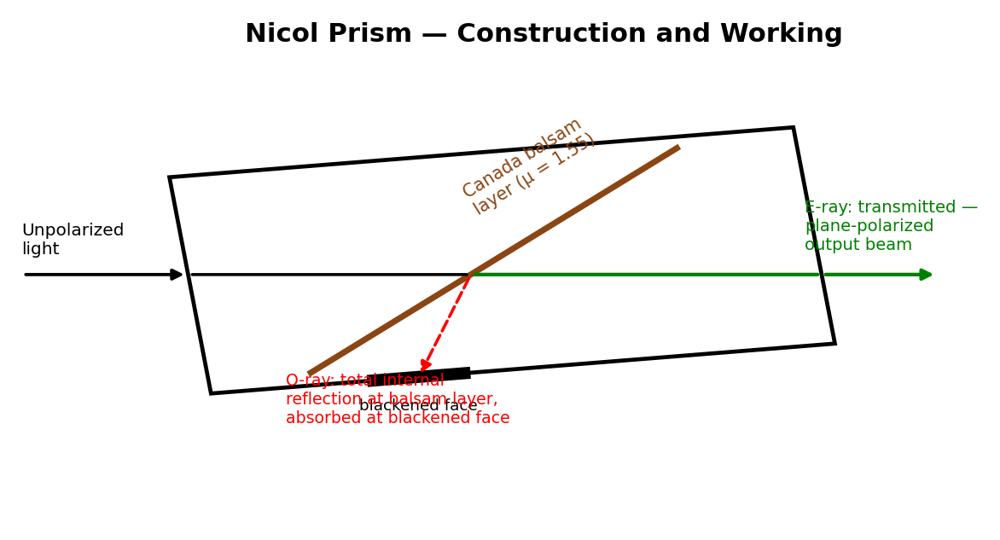
Fig. 2.4 — Construction and working of a Nicol prism: the ordinary ray suffers total internal reflection at the Canada-balsam layer and is absorbed at the blackened face, while the extraordinary ray is transmitted as a plane-polarized output beam.
Working: An unpolarized ray of light entering the Nicol prism through one end face is split, by double refraction inside the calcite, into the ordinary ray (O-ray, μₒ = 1.658) and the extraordinary ray (E-ray, μₑ = 1.486). Because the O-ray is optically denser than the Canada balsam layer (μₒ = 1.658 > μ_balsam = 1.55) while the E-ray is optically rarer than the balsam layer (μₑ = 1.486 < μ_balsam = 1.55), the geometry of the prism (in particular the carefully chosen 68° cut angle) is designed so that the O-ray strikes the calcite–balsam interface at an angle of incidence greater than the critical angle for the (denser calcite)-to-(rarer balsam, from the O-ray's point of view) interface, and hence undergoes total internal reflection at this interface, being deflected sideways and absorbed by a coating of opaque black paint on the (blackened) side of the prism. The E-ray, on the other hand, meets the balsam layer at an angle less than its own critical angle (since, from the E-ray's point of view, it is going from optically rarer calcite into optically denser balsam, where total internal reflection cannot occur at all) and is transmitted essentially straight through the balsam layer and out through the second half of the prism, emerging as a single beam of completely plane-polarized light, with vibrations confined to the principal plane of the crystal (i.e., in the plane containing the optic axis).
Uses: A Nicol prism used to produce plane-polarized light from an unpolarized source is called the polarizer; an identical second Nicol prism, used to examine/detect this polarized light (typically by rotating it about the direction of the light beam and noting the variation of transmitted intensity), is called the analyser. When polarizer and analyser are used together with their principal planes parallel, maximum light is transmitted; when their principal planes are mutually perpendicular ("crossed Nicols"), no light at all is transmitted (Malus's law, I = I₀cos²θ, where θ is the angle between the principal planes, governs the intermediate cases).
Limitations of the Nicol prism: Because it is fashioned from a natural calcite crystal, a Nicol prism is limited to the (comparatively small) sizes in which good-quality, flaw-free calcite crystal is naturally available, restricting the maximum usable beam diameter. Canada balsam absorbs strongly in the ultraviolet, so a Nicol prism cannot be used to polarize UV light. It also only works efficiently over a limited range of angles of incidence (a limited "field of view"), beyond which the ordinary ray may fail to undergo total internal reflection at the balsam layer and leak through, degrading the purity of polarization. For these reasons, Nicol prisms have been largely superseded in many everyday applications by cheaper, lighter, large-area Polaroid sheets, though Nicol prisms are still preferred where very high-quality, high-extinction-ratio polarization is required.
A wave plate (or retarder) is a thin slice of a doubly-refracting uniaxial crystal (typically quartz or mica), cut with its flat faces parallel to the optic axis (so that the optic axis lies in the plane of the plate itself, rather than perpendicular to it), of a carefully-chosen thickness. When plane-polarized light is incident normally on such a plate, with its plane of vibration at some angle (commonly 45°) to the optic axis, the incident vibration resolves inside the crystal into two mutually perpendicular components — one component vibrating parallel to the optic axis (which travels as the E-ray, with the extraordinary refractive index μₑ) and the other vibrating perpendicular to the optic axis (which travels as the O-ray, with the ordinary refractive index μₒ). Since μₒ ≠ μₑ, these two components travel through the plate with different speeds and hence emerge from the plate with an accumulated path difference (retardation)
Δ = (μₒ − μₑ) t
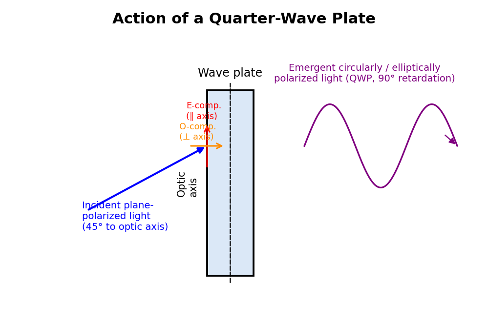
Fig. 2.5 — A quarter-wave plate resolves incident plane-polarized light (at 45° to the optic axis) into equal O- and E-components that emerge with a 90° phase difference, producing circularly polarized light.
where t is the thickness of the plate (the sign convention and which of μₒ, μₑ is larger depends on whether the crystal is positive or negative, but the essential physics is the same).
A quarter-wave plate (QWP) is a wave plate whose thickness t is chosen so that the path difference introduced between the O-ray and E-ray components is exactly one-quarter of a wavelength (or an odd multiple thereof):
(μₒ − μₑ) t = λ/4 [in general, (2n+1)λ/4]
⟹ t = λ / [4(μₒ − μₑ)]
This corresponds to a phase difference of π/2 (90°) between the two emergent components. If plane-polarized light is incident on a quarter-wave plate with its plane of vibration at 45° to the optic axis (so that the two components have equal amplitude), the two emergent components, being equal in amplitude and differing in phase by exactly π/2, combine to give circularly polarized light. If the incident plane of vibration makes some other angle (giving unequal component amplitudes), the plate instead produces elliptically polarized light, with the ellipse's axes along and perpendicular to the optic axis. A quarter-wave plate is thus the standard device used to produce circular and elliptical polarization from plane-polarized light, and (used in the reverse sense) to convert circularly or elliptically polarized light back into plane-polarized light for analysis.
A half-wave plate (HWP) is a wave plate of thickness chosen so that the path difference introduced is exactly half a wavelength (or an odd multiple thereof):
(μₒ − μₑ) t = λ/2 [in general, (2n+1)λ/2]
⟹ t = λ / [2(μₒ − μₑ)]
This corresponds to a phase difference of π (180°) between the emergent O- and E-components. The effect of a half-wave plate on incident plane-polarized light is to rotate the plane of vibration/polarization of the emergent light: if the incident plane of vibration makes an angle θ with the optic axis, the emergent light is still plane-polarized, but with its plane of vibration rotated to make an angle θ on the other side of the optic axis — i.e., the plane of polarization is effectively rotated through an angle 2θ. A half-wave plate is thus commonly used as a simple, convenient device to rotate the plane of polarization of plane-polarized light by a controlled, adjustable amount (by rotating the plate itself about the beam direction).
Production and detection of plane-polarized light: Plane-polarized light can be produced by several methods, including selective absorption (dichroic crystals such as tourmaline, or Polaroid sheets), reflection at Brewster's angle, and double refraction (Nicol prism, as in §2.7). It is detected/analysed using a second polarizer (analyser): if the transmitted intensity varies between a maximum and a complete zero (extinction) as the analyser is rotated through 360°, showing two positions of maximum and two positions of complete extinction 90° apart, the incident light is plane-polarized.
Circularly polarized light is produced by passing plane-polarized light (from a polarizer/Nicol) through a quarter-wave plate held with its optic axis at 45° to the plane of vibration of the incident light, as explained in §2.8.1 — the tip of the resultant electric field vector, viewed along the direction of propagation, traces out a circle of constant radius as time progresses, with the two perpendicular components equal in amplitude and in phase quadrature (90° out of phase). To analyse (test for) circularly polarized light and distinguish it from unpolarized light (both of which give a constant intensity, unaffected by simple rotation of an analysing Nicol alone), the light is first passed through a quarter-wave plate (which converts it back into plane-polarized light, since it exactly undoes the original quarter-wave retardation) and then through a rotating analysing Nicol: if the intensity now varies from a maximum down to a complete zero as the Nicol is rotated, the original light was indeed circularly polarized (as opposed to unpolarized, for which no such extinction would ever be found by any combination of wave-plate and Nicol).
Elliptically polarized light is produced similarly, either by passing plane-polarized light through a quarter-wave plate with the optic axis at some angle other than 45° (giving unequal component amplitudes, and hence an elliptical rather than circular locus for the tip of the resultant field vector), or by passing it through a wave plate of thickness/retardation intermediate between a quarter-wave and half-wave plate. It is analysed similarly, by first passing it through a quarter-wave plate (oriented so that its optic axis is along one of the axes of the polarization ellipse, so as to convert the elliptical vibration back into a plane vibration) followed by a rotating analysing Nicol, which then shows a clean maximum-to-zero intensity variation confirming complete conversion back to plane-polarized light.
Certain substances — most notably quartz (in certain cut orientations), sugar solutions, turpentine, and many other organic compounds having "chiral" (handed) molecular structure — possess the property of optical activity: when plane-polarized light is passed through such a substance along a suitable direction (e.g., along the optic axis of quartz, or simply through a column of an optically active solution), the plane of polarization of the emergent light is found to be rotated through a definite angle about the direction of propagation, compared to the plane of polarization of the incident light. Substances that rotate the plane of polarization clockwise (as seen looking towards the approaching light) are called dextrorotatory (or "right-handed"); those that rotate it anticlockwise are called laevorotatory ("left-handed"). For solutions, the angle of rotation is found experimentally to be directly proportional to the concentration of the optically active substance in solution and to the length of the solution column traversed by the light — this is the physical basis of using optical rotation to measure the concentration (e.g. of sugar in a solution) in a technique called polarimetry, or saccharimetry when applied specifically to sugar solutions.
A polarimeter is an instrument designed to measure this angle of optical rotation precisely. In its simplest form it consists of a monochromatic (usually sodium-light) source, a fixed polarizing Nicol, a glass tube containing the optically active solution under test, and a second, rotatable analysing Nicol (fitted with a graduated circular scale to read off the angle of rotation), followed by an eyepiece for viewing. The angle through which the analysing Nicol must be rotated, from its initial (zero-solution) extinction position, to restore extinction (or, in practical instruments, to restore a matched-brightness condition — see below) after the active solution is introduced into the light path, gives the angle of optical rotation produced by the solution.
Practical difficulty and the half-shade principle: In practice, the human eye is a very poor judge of the position of exact extinction (complete darkness) using a simple rotating-Nicol arrangement, since the intensity near extinction varies only very slowly (as cos²θ, whose slope vanishes at θ = 90°) with the angle of the analyser, making the position of minimum intensity very difficult to locate precisely by eye. This difficulty is overcome in practical polarimeters (such as the commonly-used Laurent's half-shade polarimeter and the biquartz polarimeter) by using a half-shade device, in which the field of view seen by the observer is split into two adjacent halves whose planes of polarization differ from each other by a small angle; the analyser is then rotated not to seek total darkness, but to the much more easily and precisely judged setting at which the two halves of the field appear equally (and, in the case of a biquartz, equally coloured/tinted) bright — the human eye can judge equality of brightness between two adjacent half-fields to a very much higher precision than it can judge the position of an ill-defined minimum, making these half-shade instruments capable of measuring optical rotation angles to a fraction of a degree.
Polarization phenomena and polarizing devices have numerous practical applications:
Photoelasticity (stress analysis): many transparent materials (glass, certain plastics) become doubly refracting when subjected to mechanical stress; viewing a stressed transparent model between crossed polarizers reveals coloured fringe patterns that map out the internal stress distribution, an important non-destructive testing technique in mechanical and civil engineering.
Liquid-crystal displays (LCDs): used in essentially all digital watches, calculators, computer monitors, and television screens, LCDs work by using an applied electric field to control the rotation of the plane of polarization of light passing through a liquid-crystal layer sandwiched between two polarizers, thereby switching individual picture elements between light and dark.
Polarizing sunglasses and camera filters: light reflected from horizontal surfaces such as water or a road is partially plane-polarized (predominantly horizontal), and polarizing sunglasses/filters, oriented to absorb this horizontal component, are effective at cutting out such reflected glare.
Stereoscopic (3-D) cinema projection: two projected images, intended for the left and right eyes, are polarized in two different (often mutually perpendicular, or oppositely circularly polarized) states, and the viewer wears correspondingly polarized spectacles so that each eye sees only its intended image, creating a three-dimensional viewing effect.
Optical communication and instrumentation: polarization-maintaining fibers, polarizing beam-splitters, and optical isolators (built using polarizers and wave plates) are used to control and protect the direction and state of light propagation in laser and fiber-optic systems.
Saccharimetry / quality control in the sugar industry, and analytical chemistry more generally, using polarimetry to determine the concentration and purity of optically active substances in solution, as discussed in §2.10.
Example 1. Light of wavelength 6000 Å is incident normally on a single slit of width 0.3 mm. Calculate the angular position of the first minimum and the first secondary maximum.
Solution: The first minimum occurs at e sin θ = λ, so sin θ = λ/e = (6000×10⁻¹⁰)/(0.3×10⁻³) = 2×10⁻³ rad, giving θ ≈ 0.115°. The first secondary maximum lies approximately midway to the second minimum, near e sin θ ≈ 1.5λ, giving sin θ ≈ 3×10⁻³ rad, so θ ≈ 0.172°.
Example 2. A plane transmission grating has 5000 lines per cm. Calculate the angle of diffraction for the second-order spectrum of light of wavelength 5890 Å.
Solution: Grating element d = 1/5000 cm = 2×10⁻⁴ cm = 2×10⁻⁶ m. Using d sin θ = nλ with n = 2: sin θ = nλ/d = (2 × 5890×10⁻¹⁰)/(2×10⁻⁶) = 0.589. Hence θ = sin⁻¹(0.589) ≈ 36.1°.
Example 3. Calculate the minimum number of lines a grating must have to just resolve the sodium D-lines (5890 Å and 5896 Å) in the first order.
Solution: Resolving power R = λ/dλ = nN. Here λ ≈ 5893 Å (mean), dλ = 6 Å, n = 1. So N = λ/(n·dλ) = 5893/6 ≈ 982 lines (the grating must have at least about 982 lines illuminated to resolve the sodium doublet in the first order).
Example 4. Calcite has μₒ = 1.658 and μₑ = 1.486 for sodium light (λ = 5893 Å). Calculate the minimum thickness of a calcite plate that acts as a quarter-wave plate.
Solution: For a quarter-wave plate, t = λ/[4(μₒ−μₑ)] = (5893×10⁻¹⁰)/[4×(1.658−1.486)] = (5893×10⁻¹⁰)/(4×0.172) = (5893×10⁻¹⁰)/0.688 ≈ 8.57 × 10⁻⁷ m ≈ 0.857 μm.
Example 5. Calculate the thickness of a half-wave plate of quartz for sodium light (λ = 5893 Å), given μₒ = 1.5442 and μₑ = 1.5533.
Solution: Here the crystal is positive (μₑ > μₒ), so t = λ/[2(μₑ−μₒ)] = (5893×10⁻¹⁰)/[2×(1.5533−1.5442)] = (5893×10⁻¹⁰)/(2×0.0091) = (5893×10⁻¹⁰)/0.0182 ≈ 3.24 × 10⁻⁵ m ≈ 32.4 μm.
| Concept | Key Relation |
|---|---|
| Single-slit intensity | I = I₀(sin α/α)², α = πe sin θ/λ |
| Single-slit minima | e sin θ = nλ |
| Double-slit intensity | I = I₀(sin α/α)² cos²β, β = πd sin θ/λ |
| Grating equation (principal maxima) | d sin θ = nλ |
| N-slit intensity | I = I₀(sin α/α)²(sin Nβ/sin β)² |
| Resolving power of grating | λ/dλ = nN |
| Quarter-wave plate thickness | t = λ/[4(μₒ−μₑ)] |
| Half-wave plate thickness | t = λ/[2(μₒ−μₑ)] |
| Malus's law | I = I₀ cos²θ |
Short Answer Type:
1. Distinguish between Fresnel and Fraunhofer diffraction.
2. State the condition for the nth minimum in single-slit diffraction.
3. What are "missing orders" in a double-slit diffraction pattern?
4. Define the grating element and the order of a spectrum.
5. State the Rayleigh criterion for resolution of two spectral lines.
6. Distinguish between the ordinary ray and the extraordinary ray in a doubly refracting crystal.
7. What is the function of Canada balsam cement in a Nicol prism?
8. Distinguish between a quarter-wave plate and a half-wave plate in terms of the phase difference they introduce.
9. Why is a half-shade device used in a polarimeter instead of seeking simple extinction?
Long Answer / Numerical Type:
1. Derive an expression for the intensity distribution in the Fraunhofer diffraction pattern of a single slit, and discuss the positions and relative intensities of the secondary maxima.
2. Derive the expression for resultant intensity in the Fraunhofer diffraction pattern due to N parallel slits (a diffraction grating), and hence obtain the grating equation.
3. Derive an expression for the resolving power of a plane diffraction grating using the Rayleigh criterion.
4. Explain Huygens' theory of double refraction with reference to the ordinary and extraordinary wavefronts inside a uniaxial crystal.
5. Describe the construction and working of a Nicol prism as a polarizer and analyser.
6. Explain, with necessary theory, how a quarter-wave plate can be used to produce and analyse circularly and elliptically polarized light.
7. Describe the construction and working of a half-shade (Laurent's) polarimeter, and explain how it is used to determine the concentration of a sugar solution.
Spontaneous vs stimulated emission: spontaneous emission happens randomly, in random directions and phase; stimulated emission is triggered by an incoming photon and produces an identical (same phase, direction, frequency) photon — the basis of optical amplification. Einstein's A and B coefficients relate the probabilities of spontaneous emission, stimulated emission and absorption.
Population inversion — more atoms in the excited state than the ground state — is essential for net optical gain and is achieved by pumping (optical, electrical) typically via a 3- or 4-level scheme.
Ruby laser (solid state, 3-level, pulsed, 694.3 nm) and He-Ne laser (gas, 4-level, continuous wave, 632.8 nm) illustrate two canonical designs — pumping mechanism, cavity, and output characteristics differ but the underlying gain physics is the same.
Holography: records both amplitude and phase of light scattered from an object by interfering it with a coherent reference beam on a photographic plate; reconstruction illuminates the developed hologram with the reference beam to regenerate a full 3-D wavefront. Applications: 3-D imaging, data storage, security holograms, non-destructive testing (HNDT).
Optical fibre: guides light by total internal reflection between a higher-index core and lower-index cladding. Numerical aperture NA = √(n₁² − n₂²) defines the acceptance cone; step-index and graded-index, single-mode and multimode fibres trade off bandwidth against ease of coupling. Attenuation (absorption, scattering, bending losses) and dispersion (modal, chromatic) limit the achievable bit-rate–distance product in fibre communication systems.
LASER is an acronym for Light Amplification by Stimulated Emission of Radiation. A laser is a device that produces an intense, highly directional, highly monochromatic, and spatially/temporally coherent beam of light, based fundamentally on the quantum-mechanical process of stimulated emission of radiation from atoms (or ions, molecules) in an excited energy state.
Consider an atomic system with two energy levels, a lower level E1 and an upper (excited) level E2 (E2 > E1). Three fundamental radiative processes can occur:
Stimulated (induced) absorption: an atom in the lower level E1, when it encounters a photon of exactly the right energy hν = E2 − E1, absorbs the photon and is excited (raised) to the upper level E2. The rate of this process is proportional to the number of atoms in level E1 and to the intensity (photon density) of the incident radiation.
Spontaneous emission: an atom that has been excited to the upper level E2, left to itself (with no external radiation present), will, after some average time (the "spontaneous lifetime" of the excited state, typically ~10⁻⁸ s for allowed atomic transitions), spontaneously fall back to the lower level E1, emitting a photon of energy hν = E2 − E1 in a random direction and with a random phase, entirely independent of any other photon. Ordinary sources of light (incandescent bulbs, discharge lamps) produce light almost entirely through spontaneous emission, which is why such light is incoherent.
Stimulated emission: if an atom already in the excited level E2 is struck by an incoming ("stimulating") photon of exactly the resonant energy hν = E2 − E1 (before it has had a chance to decay spontaneously), it is induced to fall immediately to the lower level E1, emitting a second photon that is identical in every respect — energy (frequency), phase, direction of travel, and state of polarization — to the incoming stimulating photon. This is the crucial process, first predicted theoretically by Einstein in 1917, that underlies laser action: one photon "stimulates" the emission of a second, perfectly identical, coherent photon, so that the number of coherent photons is effectively doubled by each such event.
Under conditions of thermal equilibrium, the number of atoms N1 in a lower energy level is always greater than the number N2 in a higher energy level (governed by the Boltzmann distribution, N2/N1 = exp[−(E2−E1)/kT], which is always less than 1 for E2 > E1 and any finite positive temperature T). Under these normal (thermal-equilibrium) conditions, absorption of photons (which requires atoms in the lower level) always dominates heavily over stimulated emission (which requires atoms in the upper level), and any incident light beam passing through the medium is, on balance, absorbed and attenuated rather than amplified.
To achieve net optical amplification (light amplification, the "LA" of LASER), it is essential to artificially create a non-equilibrium condition called population inversion, in which the number of atoms in the (metastable) upper level N2 is made greater than the number in the lower level N1 (N2 > N1) — a condition that can never occur naturally in thermal equilibrium, and must be actively created and maintained by supplying external energy to the system, a process called pumping. Once population inversion is achieved, an incident photon of the right energy triggers a cascade of stimulated emissions (rather than being net-absorbed), and the light beam passing through the medium is amplified rather than attenuated — this amplifying medium is called the active medium or gain medium of the laser.
Methods of pumping (supplying energy to create and sustain population inversion) include optical pumping (using an intense flash lamp or another laser to excite atoms via absorption of light, as in the ruby laser), electrical discharge pumping (using an electric discharge through a gas to excite atoms via collisions with energetic electrons, as in the He-Ne laser), and other methods (chemical reactions, electric current injection in semiconductor lasers, etc.).
In addition to the gain medium and a pumping mechanism, a practical laser requires an optical resonator (cavity), typically consisting of a pair of mirrors placed at the two ends of the gain medium, facing each other — one mirror made fully (or very highly) reflecting, and the other made partially transmitting (partially reflecting, partially transmitting), so as to allow a small fraction of the amplified light to escape as the useful output laser beam. Photons travelling along the axis of the cavity are reflected back and forth repeatedly between the two mirrors, passing through the gain medium many times and being amplified further at each pass by stimulated emission, building up an intense, highly directional beam confined essentially to the cavity axis (photons emitted or scattered in other, off-axis directions quickly escape from the sides of the cavity without being amplified, and hence do not contribute to the output beam) — this is the origin of the extremely high directionality of laser light. The output is coupled out through the partially-transmitting mirror.
Laser light is distinguished from ordinary light by:
High directionality (very small angular divergence/spread of the beam), due to the optical cavity geometry described above.
High monochromaticity (an extremely narrow range of wavelengths/frequencies), since only photons very close to the exact resonant transition energy are strongly amplified.
High degree of coherence, both temporal (a fixed, well-defined phase relationship is maintained over a very long time/large distance — a large coherence length) and spatial (a fixed phase relationship exists across the entire width of the beam) — a direct consequence of stimulated emission producing new photons that are exact replicas (in phase) of existing ones.
High intensity/brightness, since a very large number of coherent photons, all travelling in phase in the same narrow beam, combine to give a very high power density, far exceeding what can be achieved (in a comparably narrow beam) by any ordinary incoherent source.
The ruby laser, demonstrated by T. H. Maiman in 1960, was historically the first laser ever operated, and is a classic example of a solid-state, three-level, optically-pumped laser.
Construction: The active (gain) medium is a cylindrical rod of synthetic ruby crystal — an aluminium oxide (Al2O3, corundum) crystal in which a small fraction (typically ~0.05%) of the Al³⁺ ions are replaced by Cr³⁺ (chromium) ions; it is these chromium ions that provide the relevant energy levels for laser action, while the Al2O3 host lattice is essentially just a transparent, mechanically-robust matrix. The two end faces of the ruby rod are ground optically flat, made accurately parallel to each other, and silvered — one end fully silvered (fully reflecting) and the other end only partially silvered (partially transmitting, to serve as the output coupler) — so that the rod itself forms the optical resonator cavity. The ruby rod is surrounded by a helical (or straight) xenon flash lamp, which provides intense pulses of white light for optical pumping, and the whole assembly is typically enclosed within a reflecting (elliptical or cylindrical) housing to efficiently direct the flash-lamp light onto the rod.
Working (energy-level scheme): The Cr³⁺ ions have three relevant energy levels: a ground level E1, a short-lived, broad excited band E3 (into which chromium ions are excited by absorbing green/blue light from the flash lamp), and a metastable intermediate level E2, which lies below E3 but above E1 and — crucially — has an anomalously long lifetime (~ 3–5 milliseconds, several orders of magnitude longer than the typical ~10⁻⁸ s lifetime of ordinary excited states).
Intense flash-lamp light optically pumps a large number of Cr³⁺ ions from the ground level E1 up into the broad excited band E3.
These excited ions very rapidly (within about 10⁻⁸ s) undergo a radiationless transition (giving up their excess energy as heat/lattice vibrations, not as light) down to the long-lived metastable level E2.
Because level E2 has such a long lifetime, ions accumulate there far faster than they decay out of it, and with a sufficiently intense pump, a population inversion is achieved between E2 and the ground level E1 (this constitutes a three-level laser scheme, since the ground level E1, which must be substantially depopulated to achieve inversion, is itself the terminal level of the laser transition — this makes three-level lasers comparatively inefficient, requiring very intense pumping, since more than half the ground-state population must be pumped away just to reach population inversion).
A chance spontaneously-emitted photon (of wavelength 694.3 nm, in the red) travelling along the axis of the rod triggers a cascade of stimulated emission as it bounces back and forth between the two silvered end faces, rapidly depopulating level E2 down to E1 and building up an intense, coherent pulse of red laser light, a fraction of which escapes through the partially-silvered end as the output beam.
Because of the three-level scheme and the need to repopulate/deplete the ground level between pulses, the ruby laser normally operates in a pulsed mode (rather than continuously), typically emitting successive pulses timed to successive flash-lamp discharges.
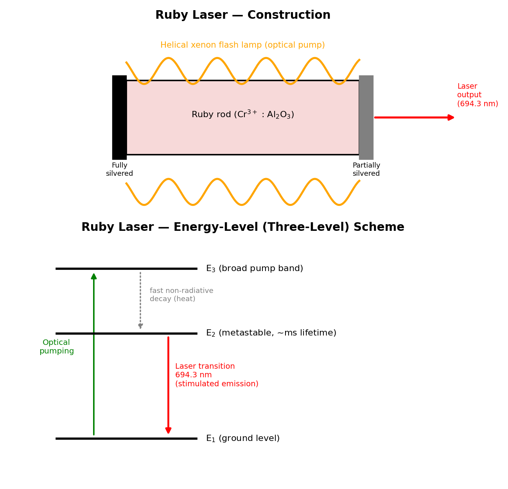
Fig. 3.1 — Construction of the ruby laser (top) and its three-level energy-level scheme (bottom), showing optical pumping to E3, fast non-radiative decay to the metastable level E2, and the laser transition E2 → E1 at 694.3 nm.
Limitations of the ruby laser: Being a three-level system, it has a high threshold pump energy (since more than half the Cr³⁺ ions must be pumped out of the ground state merely to achieve population inversion), giving it low overall efficiency (typically well under 1%). It operates only in pulsed mode (not continuously), with a low pulse-repetition rate, since the flash lamp and the rod require time to cool and reset between pulses, and a large fraction of the input electrical energy is dissipated as heat, requiring effective cooling of the rod.
The helium–neon (He-Ne) laser, first operated in 1961, is the most common and familiar type of gas, four-level, electrically-pumped continuous-wave laser, well known for its output of visible red light.
Construction: The active medium is a mixture of helium and neon gas (typically in a ratio of about 10:1 by partial pressure, He being in larger proportion), enclosed in a long, narrow glass discharge tube at low pressure (a few torr). The two ends of the tube are fitted with a pair of mirrors forming the optical resonator (one fully reflecting, one partially transmitting for output coupling; in many designs these mirrors are external to the tube, with the tube ends closed by windows set at Brewster's angle to minimise reflection losses for one polarization and thereby ensure the laser output is naturally plane-polarized). A high-voltage electrical discharge is set up along the length of the tube (via electrodes) to excite the gas.
Working (energy-level scheme): Although the neon atoms are the ones that actually undergo the lasing transition and emit the output laser photons, the helium atoms play an essential supporting role:
The electrical discharge accelerates free electrons along the tube, which collide with and excite helium atoms from their ground state up to certain metastable excited states (this excitation of helium, rather than neon, is efficient because helium's relevant excited-state energies are more readily reached by electron-impact excitation in the discharge).
These excited helium atoms have metastable energy levels that happen to lie very close in energy to certain excited energy levels of the neon atom. When an excited helium atom collides with a ground-state neon atom, it can transfer its excitation energy efficiently to the neon atom (a process called resonant energy transfer), exciting the neon atom to this particular upper level (call it E4) while the helium atom returns to its own ground state ready to be excited again — this helium-mediated excitation is far more efficient at selectively populating this one particular neon level than direct electron-impact excitation of neon would be, and it is the key to achieving population inversion in this particular four-level scheme.
This selectively, efficiently populated upper neon level E4 lies well above a lower neon level E3 (the terminal level of the specific laser transition of interest), which is itself well above the neon ground level, and crucially, this lower laser level E3 is normally sparsely populated (it decays rapidly, via further spontaneous emission and collisions with the tube walls, down towards the neon ground state) — so that population inversion between E4 and E3 is comparatively easy to establish and maintain continuously, since (unlike the ruby three-level case) the lower laser level E3 is not the ground state and does not need to be substantially depopulated in bulk; this is why the He-Ne laser is described as a four-level laser system, and why it is capable of continuous-wave (CW), rather than only pulsed, operation.
Stimulated emission from E4 down to E3 produces the laser output; the well-known 632.8 nm (visible red) transition is the most common and commercially important output line of the He-Ne laser, though other lines (in the infrared, and a green line) are also possible from the same gas mixture with appropriately-designed mirrors.
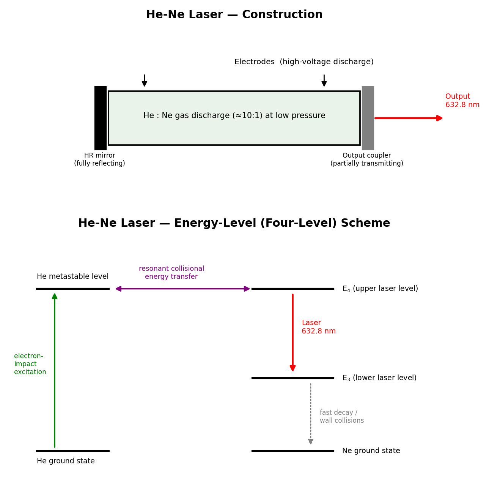
Fig. 3.2 — Construction of the He-Ne laser (top) and its four-level energy scheme (bottom): helium atoms, excited by electron impact, transfer energy resonantly to neon atoms, which then undergo the 632.8 nm laser transition down to a rapidly-depopulated lower level.
The He-Ne laser is widely valued (despite its comparatively low output power, typically only a few milliwatts) for its excellent beam quality — very high spatial and temporal coherence, a very stable single-frequency output, and long operating lifetime — which historically made it the standard laser for laboratory demonstrations, alignment tools, barcode scanners, and interferometry.
Advantages and limitations of the He-Ne laser: Being a four-level system, it has a low pumping threshold and operates continuously (CW) rather than only in pulses, and it produces a highly stable, narrow-linewidth, excellent-quality beam with a long operational lifetime (many thousands of hours) at comparatively low cost. Its principal limitation is its very low output power (typically 0.5–50 mW) and low overall electrical-to-optical efficiency (well under 1%), which makes it unsuitable for material-processing or high-power applications, and restricts it mainly to alignment, metrology, spectroscopy, and teaching/demonstration purposes — for higher-power continuous-wave applications, semiconductor diode lasers or ion/solid-state lasers are generally preferred today.
The unique properties of laser light — high monochromaticity, directionality, coherence, and the ability to concentrate very high power/energy density into a small spot or a short pulse — have led to laser applications across virtually every field of science, industry, and daily life, including:
Industry: precision cutting, drilling, welding, and surface-hardening of metals and other hard materials, exploiting the highly concentrated, controllable energy delivery of a focused laser beam.
Medicine: laser surgery (e.g. in ophthalmology — retinal reattachment, LASIK corneal reshaping; in dermatology — removal of tattoos, birthmarks and skin lesions), and as a precise, often bloodless (cauterising) surgical "knife" in various other surgical specialities.
Communication: as the carrier/source of the light signal in optical-fibre communication systems (see the following section, §3.6), owing to its high degree of coherence, its ability to be modulated at very high frequencies, and the extremely large information-carrying (bandwidth) capacity available at optical frequencies.
Scientific research and metrology: in high-precision interferometry and distance/length measurement (e.g. laser-based surveying and the laser interferometers used to detect gravitational waves), spectroscopy, and as a fundamental research tool for studying light–matter interaction, nonlinear optics, and cold-atom physics.
Defence and other applications: range-finding, target designation, and various other military applications; everyday applications such as laser printers, barcode scanners in retail checkouts, optical data storage (reading and writing CDs, DVDs and Blu-ray discs), and laser pointers.
Holography (described next), which fundamentally depends on the high coherence of laser light for recording the interference pattern that constitutes a hologram.
Holography (from the Greek "holos", meaning "whole", and "graphein", "to write/record") is a technique, invented by Dennis Gabor in 1948 (and made practically feasible only after the invention of the laser, which provided the necessary highly coherent light source), for recording and later reconstructing the complete wavefront — both the amplitude and the phase — of light scattered by an object, thereby producing a genuinely three-dimensional image of the object, in contrast with ordinary photography, which records only the intensity (amplitude-squared) distribution of light and hence produces only a flat, two-dimensional record with no true depth information.
The fundamental principle underlying holography is interference: since an ordinary photographic recording medium (film) can only respond to and record local light intensity, not phase directly, the phase information of the object wave is ingeniously "encoded" into a recordable intensity pattern by making the object wave interfere with a second, mutually coherent reference wave derived from the same laser source. The resulting interference pattern — a fine, complex fringe pattern whose local spacing and contrast depend sensitively on both the amplitude and the relative phase of the object wave at every point — is recorded on a high-resolution photographic plate; this recorded interference pattern is the hologram. Because the interference pattern depends on phase as well as amplitude, the developed hologram, when later illuminated appropriately, can be made to reconstruct the complete original object wavefront (amplitude and phase), producing a full three-dimensional virtual image of the original object, complete with parallax (the ability to view around the recorded objects slightly by moving one's viewpoint, exactly as one would with the original real object).
A single, highly coherent laser beam is split (using a partially-silvered mirror or beam-splitter) into two beams:
The object beam, which is directed onto (and scattered/reflected by) the object being recorded, and which then falls onto the photographic plate.
The reference beam, which is directed straight onto the same photographic plate, without interacting with the object, typically via a separate path involving mirrors and a beam-expanding lens.
Since both beams originate from the same laser (and hence are mutually coherent), they interfere at the plate, producing an extremely fine and complex interference-fringe pattern that encodes, at every point of the plate, information about both the amplitude and the phase of the light scattered from every point of the object (because every point on the object scatters light that reaches every point of the plate, unlike ordinary photography where a lens forms a point-to-point image). The photographic plate, after developing, is the finished hologram — to the naked eye, a developed hologram typically looks like nothing more than a seemingly random, fine, greyish swirl pattern, bearing no visual resemblance whatsoever to the original object; the object's image is encoded, not directly displayed.
To view the recorded three-dimensional image, the developed holographic plate is illuminated once again with a beam of coherent light (ideally identical in wavelength and direction to the original reference beam used during recording). The fine fringe pattern recorded on the plate acts as an extremely complex diffraction grating, and the incident reconstruction beam is diffracted by this pattern in such a way as to reconstruct (regenerate) the original object wavefront (essentially exactly, in both amplitude and phase) that had been present during recording — an observer looking through/at the illuminated hologram, from the appropriate side, therefore sees a full three-dimensional virtual image of the original object, apparently occupying the same position in space as the original object did during recording, exhibiting genuine parallax and depth. (Depending on the precise recording geometry, a real image may also be simultaneously formed on the other side of the plate.)
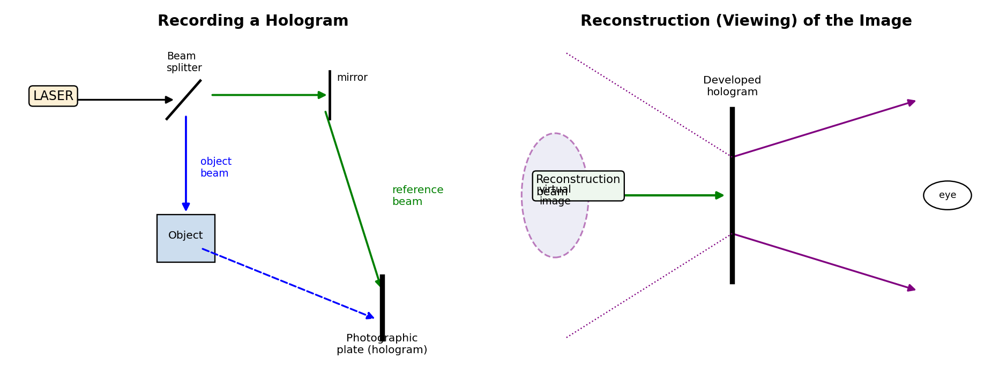
Fig. 3.3 — Recording a hologram using a split laser beam (object beam + reference beam) (left), and reconstructing the three-dimensional virtual image by illuminating the developed hologram with a coherent reconstruction beam (right).
Three-dimensional (3-D) display and art: holographic images/displays for museums, exhibitions, and artistic/decorative purposes.
Security and anti-counterfeiting: holograms are widely embossed onto credit/debit cards, currency notes, passports, branded product packaging and identity documents, since a genuine hologram is extremely difficult to reproduce or forge without access to the original recording setup.
Holographic (optical) data storage: exploiting the ability of a single recording medium to store a very large number of independent holograms (e.g. by recording at many different reference-beam angles, or wavelengths, in the same volume of a suitable recording medium) for extremely high-density data storage.
Non-destructive testing and metrology: techniques such as holographic interferometry, in which two holograms of the same object (recorded, for instance, before and after the object is subjected to some small stress, strain, vibration, or heating) are compared/superposed, producing a fringe pattern that maps out even extremely small (sub-micron) deformations, vibrations, or surface irregularities of the object — used for precision engineering inspection and vibration analysis.
Scientific and medical imaging: microscopy and other imaging techniques that benefit from the ability of holography to record and later manipulate/reconstruct complete three-dimensional wavefront information.
An optical fiber is a thin, flexible, cylindrical waveguide made of transparent dielectric material (glass or plastic) that is used to guide/transmit light (typically laser or LED light, in the visible or, more commonly for communication, the near-infrared) over long distances via the phenomenon of total internal reflection, with very low loss of signal. The basic structure of a typical optical fiber, viewed in cross-section, consists of three concentric parts:
The core: the innermost, central cylindrical region of the fiber, made of a transparent dielectric of (comparatively) higher refractive index n1, through which the light actually propagates.
The cladding: an outer cylindrical layer, coaxial with and surrounding the core, made of a transparent dielectric of (comparatively) lower refractive index n2 (n2 < n1). It is this refractive-index difference between core and cladding that confines light to the core via total internal reflection at the core–cladding interface.
The (protective) buffer/jacket coating: an outermost coating (typically of a tough plastic/polymer material) that provides mechanical strength, protection from moisture, abrasion and physical damage, and handling durability to the delicate glass core–cladding structure; it plays no role in the actual optical guiding of light.
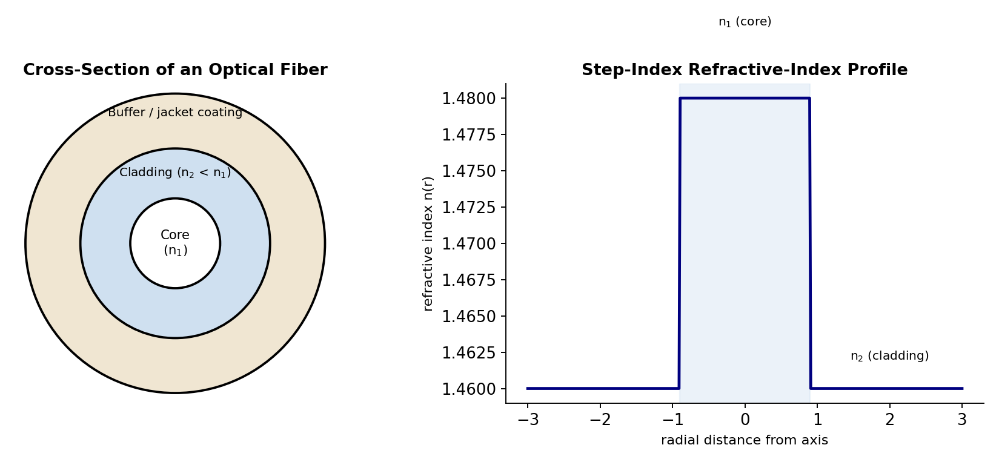
Fig. 3.4 — Cross-section of a typical optical fiber (left), showing the core, cladding and buffer coating, and the corresponding step-index refractive-index profile (right).
Optical fibers are classified in two independent ways: (i) according to the number of modes (ray paths/light paths) that the fiber can support, and (ii) according to the refractive-index profile across the core.
Single-mode fiber (SMF): the core diameter is made very small (typically only a few micrometres, comparable to the wavelength of light used), so that the fiber supports the propagation of only a single mode (essentially, only rays travelling very nearly parallel to the fiber axis are supported). Single-mode fibers are free of "intermodal dispersion" (see §3.11 below) and hence offer the highest possible information-carrying bandwidth and are used for long-distance, high-bandwidth telecommunication links, but they require more expensive, precisely-aligned equipment (lasers, connectors) to couple light efficiently into their very small core.
Multimode fiber (MMF): the core diameter is made comparatively much larger (typically 50–1000 micrometres), so that the fiber supports the simultaneous propagation of a very large number of distinct modes (rays travelling at many different angles/zig-zag paths within the core, all satisfying the condition for total internal reflection). Multimode fibers are easier and cheaper to couple light into (using inexpensive LED sources) and to splice/connect, but they suffer from intermodal dispersion, which limits their usable bandwidth and transmission distance compared to single-mode fiber; they are typically used for shorter-distance, lower-bandwidth applications (e.g. local-area networks).
Independently of the mode classification, fibers are also classified by their refractive-index profile:
Step-index fiber: the refractive index is uniform (constant) throughout the core (n1) and drops abruptly (in a sharp "step") to a lower, again-uniform value (n2) at the core–cladding boundary. Both single-mode and multimode fibers can be manufactured with a step-index profile (giving, respectively, "single-mode step-index" and "multimode step-index" fiber).
Graded-index fiber: the refractive index of the core is not uniform but is made to vary smoothly and continuously, decreasing gradually (typically following an approximately parabolic profile) from a maximum value at the very centre of the core axis to a minimum value (matching the cladding index) at the core–cladding boundary. In such a fiber, light rays travelling off-axis continuously bend (refract) gradually back towards the axis, rather than reflecting sharply at a single well-defined interface as in a step-index fiber, following continuously-curving paths rather than straight zig-zag paths; this graded profile is specifically designed to reduce the intermodal dispersion of a multimode fiber (by making the different-path-length modes travel at correspondingly different, partially self-compensating average speeds, so that they take more nearly equal total transit times), giving graded-index multimode fiber significantly better bandwidth performance than step-index multimode fiber, though still not as good as single-mode fiber.
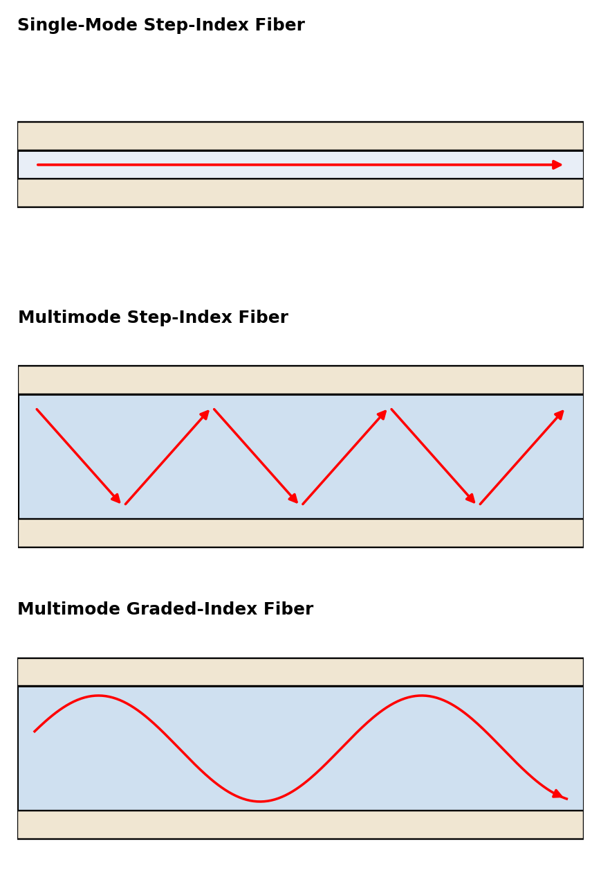
Fig. 3.5 — Comparison of ray paths in single-mode step-index, multimode step-index, and multimode graded-index optical fibers.
For a ray of light incident on the flat, polished end-face of an optical fiber from outside (typically from air, of refractive index n0 = 1), to be successfully guided down the fiber by repeated total internal reflection at the core–cladding boundary, the ray must, after refracting into the core at the end face, strike the core–cladding interface at an angle of incidence (measured from the normal to that interface, i.e. from the fiber axis direction, in the core) equal to or greater than the critical angle θc for the core-to-cladding interface, where, by Snell's law applied at the critical angle, sin θc = n2/n1.
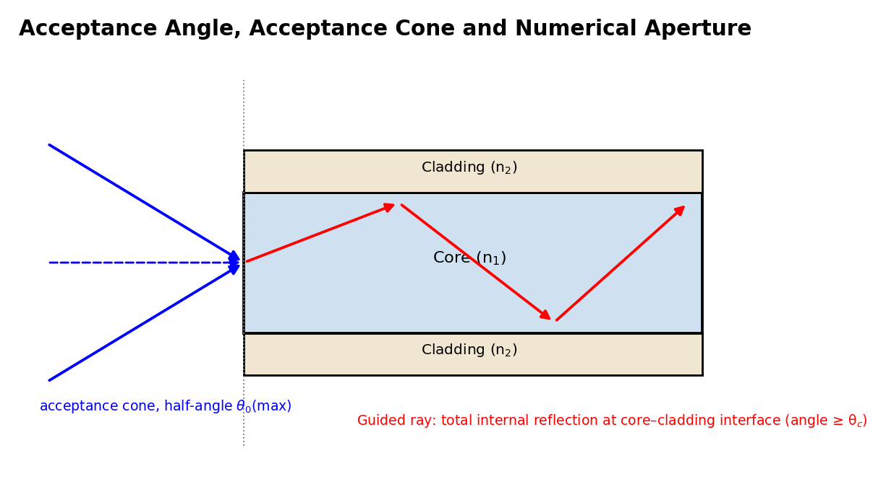
Fig. 3.6 — A ray entering the fiber end face within the acceptance cone (half-angle θ0(max)) refracts into the core and strikes the core–cladding interface beyond the critical angle, so it is guided by repeated total internal reflection.
Derivation of the acceptance angle and numerical aperture: Consider a ray incident on the flat end face of the fiber from air, at an angle of incidence θ0 (measured from the fiber axis), refracting into the core at angle θ1 (from the axis, by Snell's law at the end face: n0 sin θ0 = n1 sin θ1), and then travelling to strike the core–cladding interface at an angle (90° − θ1) from the normal to that interface (since the interface is parallel to the fiber axis, i.e. perpendicular to the end face). For this ray to undergo total internal reflection at the core-cladding boundary and hence be successfully guided, we require
(90° − θ1) ≥ θc i.e. θ1 ≤ (90° − θc)
The maximum permissible value of θ1 is therefore θ1(max) = 90° − θc, corresponding, via Snell's law at the end face, to a maximum permissible angle of incidence θ0(max) from air, called the acceptance angle of the fiber:
n0 sin θ0(max) = n1 sin θ1(max) = n1 sin(90° − θc) = n1 cos θc
Using cos θc = √(1 − sin²θc) = √(1 − n2²/n1²) = √(n1² − n2²)/n1, and taking n0 = 1 (air):
sin θ0(max) = n1 · [√(n1² − n2²)/n1] = √(n1² − n2²)
This quantity, sin θ0(max), is defined as the numerical aperture (NA) of the fiber:
NA = sin θ0(max) = √(n1² − n2²)
The numerical aperture is a dimensionless number (always < 1) that characterises the fiber's light-gathering power — physically, it is a measure of the maximum angle (from the fiber axis) within which an incident ray of light, striking the end face of the fiber from outside, can be accepted into the fiber and still be successfully guided along the fiber by total internal reflection. All rays incident on the end face within a cone of half-angle θ0(max) around the fiber axis are accepted and guided; this cone is called the acceptance cone of the fiber, and any ray incident from outside this cone (i.e. at an angle greater than θ0(max)) fails to be totally internally reflected at the core–cladding boundary, leaks/refracts out into the cladding, and is lost, not being guided down the fiber. A related, often quoted parameter is the fractional refractive index difference
Δ = (n1 − n2)/n1
in terms of which the numerical aperture may be approximately expressed (for the common case where n1 ≈ n2, i.e. Δ ≪ 1) as NA ≈ n1√(2Δ). A larger numerical aperture allows more light to be coupled into the fiber (useful for coupling from an incoherent, wide-angle source like an LED) but, for multimode fibers, is generally also associated with greater intermodal dispersion (see below), since a wider range of ray angles/mode paths of different lengths are then supported by the fiber.
Once a ray is successfully accepted into the fiber core (i.e. lies within the acceptance cone, as derived above), it propagates along the length of the fiber by undergoing repeated total internal reflection at the core–cladding interface, bouncing back and forth (zig-zagging, in the simple ray-optics picture applicable to multimode step-index fiber) between the interface on one side of the core and the interface on the other side, each time striking the interface at an angle greater than the critical angle θc and hence being reflected with (ideally) no loss of energy, effectively "trapped" and guided along the length of the core, however long the fiber, with the ray direction (and hence the exact zig-zag path/mode) determined by the particular angle at which the ray originally entered the fiber (within the acceptance cone).
For a rigorous description (particularly for single-mode and graded-index fibers, where the simple ray picture becomes inadequate or misleading), the propagation must be described in terms of electromagnetic wave theory, treating the fiber as a cylindrical dielectric waveguide and solving Maxwell's equations subject to the boundary conditions at the core–cladding interface; this wave analysis shows that only certain discrete, allowed field distributions ("modes"), each corresponding (in the ray picture) to rays travelling at one of a discrete set of specific angles, can actually propagate stably in the fiber — this is the origin of the term "multimode" (many discrete allowed modes/ray-angles) versus "single-mode" (the fiber's dimensions and refractive-index profile are such that only the single fundamental mode, corresponding to rays travelling essentially parallel to the axis, can propagate) fiber.
In an optical-fiber communication link, the information to be transmitted (voice, data, video, etc., generally first converted into digital, binary electrical form) is used to modulate (switch on and off, or otherwise vary) the intensity of light emitted by an optical source — typically a semiconductor laser diode or a light-emitting diode (LED), operating at a near-infrared wavelength chosen to coincide with one of the fiber's low-loss "transmission windows" (commonly around 850 nm, 1310 nm, or 1550 nm) — this modulated light signal is launched into (coupled into) one end of the optical fiber, propagates (guided by total internal reflection, as described above) along the length of the fiber, possibly through one or more intermediate optical amplifiers/repeaters for very long links, and is finally detected at the receiving end by a photodetector (typically a semiconductor photodiode), which converts the received modulated light signal back into an electrical signal for further processing/decoding. Optical-fiber communication is preferred over conventional (metallic, electrical) communication links for long-distance, high-capacity transmission because of the fiber's extremely large information-carrying bandwidth (owing to the very high frequency, ~10¹⁴ Hz, of the optical carrier), its very low transmission loss (permitting long distances between repeaters/amplifiers), its immunity to electromagnetic interference (since it carries information as light, not electrical current, and is unaffected by nearby electrical/radio noise), its small size and light weight, and the abundance and low cost of its basic raw material (silica/glass).
Summary of advantages and limitations of optical-fiber communication:
Advantages: enormous bandwidth and information-carrying capacity; very low transmission loss over long distances; complete immunity to electromagnetic and radio-frequency interference; excellent electrical isolation and safety (no risk of sparks or short circuits, useful in explosive/hazardous environments); small size, light weight, and flexibility; high degree of data security (fiber transmission is very difficult to tap without detection); and abundance/low cost of the basic raw material (silica).
Limitations: the glass fiber itself is comparatively brittle and must be handled carefully during installation; joining (splicing) two fiber ends with low loss requires precise alignment and specialised (often expensive) equipment; the fiber and its connectors are more expensive to install and terminate than simple copper cable, though costs have fallen greatly; electrical power cannot be transmitted along with the signal (a separate power supply is needed at remote/repeater locations, unlike some copper systems); and the light signal must be converted to and from electrical form (using lasers/LEDs and photodetectors) at every transmitting and receiving end, adding to overall system cost and complexity.
Two fundamentally different kinds of signal-degradation effects limit the performance (usable transmission distance and usable bandwidth/data rate) of a practical optical-fiber communication link: attenuation (loss of signal power/energy) and dispersion (spreading/broadening of a transmitted pulse in time).
Attenuation refers to the reduction in the power (intensity) of the optical signal as it travels along the length of the fiber, due to a combination of loss mechanisms, chiefly:
Absorption losses: loss of light energy converted into heat, due to (i) intrinsic absorption by the fundamental electronic and vibrational (molecular) resonances of the glass material itself, at wavelengths outside the fiber's useful transmission windows, and (ii) extrinsic absorption due to impurities (in particular, trace amounts of transition-metal ions, and especially the OH⁻ hydroxyl ion/water impurity, which produces a strong, well-known absorption peak near 1400 nm) unintentionally present in the glass from the manufacturing process.
Scattering losses: chiefly Rayleigh scattering, arising from microscopic (sub-wavelength-scale), random, unavoidable fluctuations/inhomogeneities in the density and composition of the glass (frozen in during manufacture as the molten glass solidifies), which scatter a small fraction of the propagating light out of the guided mode in all directions; Rayleigh scattering loss varies as 1/λ⁴ (very strongly wavelength-dependent, falling steeply as wavelength increases), and sets, in practice, the fundamental lower limit on achievable attenuation in modern high-purity silica fiber (this is why longer-wavelength transmission windows, e.g. 1550 nm, give the lowest overall attenuation and are preferred for long-haul communication links).
Bending losses: additional loss of light out of the fiber, over and above the intrinsic absorption and scattering losses, caused by physical bending of the fiber — macrobending (loss due to a large-scale, visible bend or curve in the cable, e.g. around a tight corner, where the angle of incidence at the core–cladding boundary on the outside of the bend may fall below the critical angle, allowing light to escape) and microbending (loss due to very small-scale, often microscopic, random distortions or kinks of the fiber axis, e.g. induced by uneven pressure or roughness from the cable-jacket/buffer material, causing repeated, small, cumulative energy leakage from the core into the cladding).
Attenuation is conventionally expressed in decibels per kilometre (dB/km) of fiber length, via the standard logarithmic definition, attenuation (dB/km) = (10/L) log₁₀(Pin/Pout), where Pin and Pout are, respectively, the optical powers launched into, and remaining after propagating a length L of, the fiber; modern high-quality silica communication fiber achieves attenuation figures as low as about 0.2 dB/km at the favoured 1550 nm transmission window.
Dispersion refers to the phenomenon by which a sharp, narrow input light pulse launched into the fiber progressively spreads out (broadens) in time as it travels along the fiber, because different components of the pulse (different modes, or different wavelength components) travel down the fiber at slightly different group velocities and hence arrive at the far end at slightly different times, smearing out the originally sharp pulse. If successive pulses (representing successive data bits) are spaced too closely in time, this pulse-broadening can cause neighbouring pulses to overlap ("inter-symbol interference") at the receiver, corrupting the transmitted information — dispersion therefore places a fundamental limit on the maximum usable data-transmission rate (bandwidth) of a given fiber link, independent of and in addition to the limit imposed by attenuation. Dispersion is conventionally classified as:
Intermodal dispersion (modal dispersion): occurs only in multimode fiber, and arises because different modes (different ray-angle zig-zag paths) travel different total physical path lengths down the fiber (a ray travelling at a larger angle to the axis follows a longer, more zig-zagged path than a ray travelling nearly parallel to the axis, to cover the same net fiber length), and hence take different amounts of time to traverse a given length of fiber, even though all modes travel at essentially the same speed within the (uniform-index) core; the resulting pulse spreading can be reduced (as noted in §3.7) by using a graded-index profile (which partially equalises the transit times of different modes) or, most effectively, eliminated altogether by using single-mode fiber, in which only a single mode/ray-path exists in the first place.
Intramodal dispersion (chromatic dispersion): occurs even within a single mode (and is hence the dominant, limiting form of dispersion in single-mode fiber), and arises because any real optical source (even a laser) emits light over a small but non-zero spread/range of wavelengths, and different wavelength components of the light travel at slightly different group velocities down the fiber; it has two physically distinct contributing causes:
Material dispersion: arises because the refractive index of the (silica glass) core material itself is not perfectly constant but varies (depends) somewhat with wavelength, so that different wavelength components of the pulse, even if confined to travel exactly the same geometric mode/path, nonetheless travel at slightly different speeds purely due to this wavelength-dependence of the material's refractive index.
Waveguide dispersion: arises from the guiding (waveguiding) geometry of the fiber itself, independent of any wavelength-dependence of the bulk material's refractive index — because the precise fraction of a given mode's optical power that effectively travels in the (higher-index) core versus the (lower-index) cladding itself depends somewhat on wavelength, different wavelength components experience a somewhat different effective refractive index (and hence a somewhat different group velocity) purely due to this waveguide-geometry effect, even for a hypothetical, dispersionless core material.
In practice, careful engineering of the fiber's refractive-index profile can be used to make the (usually oppositely-signed) material and waveguide dispersion contributions partially cancel each other at a particular, chosen operating wavelength (a "dispersion-shifted" fiber design), further extending the usable bandwidth-distance product of modern single-mode optical-fiber communication links.
Example 1. A ruby laser emits light of wavelength 694.3 nm. Calculate the energy difference (in eV) between the two levels involved in the transition.
Solution: E = hc/λ = (6.63×10⁻³⁴ × 3×10⁸)/(694.3×10⁻⁹) = (1.989×10⁻²⁵)/(6.943×10⁻⁷) ≈ 2.865×10⁻¹⁹ J. Converting to eV (÷1.6×10⁻¹⁹): E ≈ 1.79 eV.
Example 2. In a population of atoms at temperature 300 K, the energy gap between two levels is 2 eV. Calculate the ratio of the number of atoms in the upper level to that in the lower level under thermal equilibrium (Boltzmann's constant k = 8.62×10⁻⁵ eV/K).
Solution: N2/N1 = exp[−(E2−E1)/kT] = exp[−2/(8.62×10⁻⁵ × 300)] = exp[−2/0.02586] = exp[−77.3] ≈ 10⁻³⁴ (an extremely small ratio), confirming that population inversion (N2 > N1) can never occur naturally in thermal equilibrium and must be produced by active pumping.
Example 3. An optical fiber has a core refractive index n1 = 1.50 and cladding refractive index n2 = 1.45. Calculate (a) the numerical aperture and (b) the acceptance angle of the fiber.
Solution: (a) NA = √(n1² − n2²) = √(1.50² − 1.45²) = √(2.25 − 2.1025) = √0.1475 ≈ 0.384. (b) Acceptance angle θ0(max) = sin⁻¹(NA) = sin⁻¹(0.384) ≈ 22.6°.
Example 4. Calculate the fractional refractive index difference (Δ) and the critical angle at the core–cladding interface for the fiber of Example 3.
Solution: Δ = (n1−n2)/n1 = (1.50−1.45)/1.50 = 0.05/1.50 ≈ 0.0333 (3.33%). The critical angle is given by sin θc = n2/n1 = 1.45/1.50 = 0.9667, so θc = sin⁻¹(0.9667) ≈ 75.2°.
Example 5. The input power to a 12 km long optical fiber is 8 mW and the output power is 4 mW. Calculate the attenuation of the fiber in dB/km.
Solution: Attenuation (dB) = 10 log₁₀(Pin/Pout) = 10 log₁₀(8/4) = 10 log₁₀(2) = 10 × 0.301 = 3.01 dB (total, over 12 km). Attenuation per unit length = 3.01/12 ≈ 0.25 dB/km.
| Concept | Key Relation |
|---|---|
| Photon energy of a transition | E = hν = hc/λ |
| Boltzmann population ratio | N2/N1 = exp[−(E2−E1)/kT] |
| Numerical aperture | NA = √(n1² − n2²) |
| Acceptance angle | θ0(max) = sin⁻¹(NA) |
| Critical angle | sin θc = n2/n1 |
| Fractional index difference | Δ = (n1 − n2)/n1 |
| Fiber attenuation | Attenuation (dB) = 10 log₁₀(Pin/Pout) |
Short Answer Type:
1. Distinguish between spontaneous emission and stimulated emission.
2. What is population inversion, and why can it never occur in thermal equilibrium?
3. What is the function of the optical resonator (cavity) in a laser?
4. Why is the ruby laser described as a three-level laser and the He-Ne laser as a four-level laser?
5. State the wavelength of the output of a ruby laser and of a He-Ne laser.
6. What is the essential difference between a hologram and an ordinary photograph?
7. Define the core, cladding, and acceptance cone of an optical fiber.
8. Distinguish between step-index and graded-index optical fibers.
9. Distinguish between intermodal and intramodal dispersion in an optical fiber.
Long Answer / Numerical Type:
1. Explain the basic principles of laser action, including absorption, spontaneous emission, stimulated emission, and population inversion.
2. Describe the construction and working of a ruby laser with a suitable energy-level diagram.
3. Describe the construction and working of a He-Ne laser with a suitable energy-level diagram, and explain the role of helium atoms in the process.
4. Explain the basic principle of holography, and describe how a hologram is constructed and how the three-dimensional image is reconstructed.
5. Derive an expression for the numerical aperture and acceptance angle of an optical fiber.
6. Explain the different mechanisms of attenuation (absorption, scattering, and bending losses) in an optical fiber.
7. Distinguish between intermodal and intramodal (material and waveguide) dispersion in an optical fiber, and explain how each limits the bandwidth of a fiber-optic communication link.